PELÍCULAS DE TEMÁTICA GAY
GAY THEMED MOVIES
GAY THEMED MOVIES
| Portada Cover |
Titulo Title |
Año Year |
Idioma Language |
Formato Format |
Resolución Resolution |
Elenco Cast |
Notas Notes |
|---|---|---|---|---|---|---|---|
| 3 in a Bed | 2014 | EN | mp4 | 720p | Brennan Reece, Darren Bransford, Verity-May Henry, Coby Hamilton, Jody Latham, Kimberly Simpson, Louisa Bettine, Sian Hill, Mark Hill, Joe Chambers, Lloyd Eyre-Morgan, Jack Bennetts, Amy Jane Ollies, Katie James, Hector Moss, Danny Seward, Lyn Eyre-Morgan, Katie Latham, Jo Rollitt, Eva Quinn, Olivia Sweeney, Jenny Morgan, Janet Bamford, Matt Smith, Sarah Johnson, Jake Delea, Jemma Noonan, David Solomons, Cameron Lennox, Neil Clarke, Steven Fletcher, Emma Goswell, Chris Hollday | ||
| 3-Day Weekend | 2008 | EN | mp4 | 720p | Chris Carlisle, Joel Harrison, Gaetano Jones, Derek Long, Derek Meeker, Douglas Myers, Daniel Rhyder, Stephen Twardokus | ||
| 4th Man Out | 2015 | EN | mp4 | 1080p | Evan Todd, Parker Young, Chord Overstreet, Jon Gabrus, Jennifer Damiano, Jordan Lane Price, Kate Flannery, Laura Harrier, Brooke Dillman, Alex Rennie, Jake Epstein, Doug Moe, Nick Clark, Danelle Eliav, Rich Lounello, Heather Sage Blair, Ron Polacco, Mitch Giannunzio, Brandon Gill, Tommy Bracco, Trey Gerrald, Lucas Hazlett, Sean Hankinson, Marquis Wood, Karlee Fomalont, Christopher Whalen, Erika Smith, Kenneth De Abrew, Vanessa Thorpe, Brett Eidman, Elisabeth Henry-Macari, Drake Abshire, Tyler Barnes, Cristina DiCarlo, Emily Gardner, Nnete Matima, Kenneth McBain, Steven Patrick O'Connor, Merritt Reid, Kyrsten St. Pierre | ||
| The 10 Year Plan | 2014 | EN | mp4 | 1080p | Jack Turner, Michael Adam Hamilton, Moronai Kanekoa, Adam Bucci, Teri Reeves, Michael Rothhaar, Debra Wilson, Ben Palacios, Trevor Kuhn, Jesse Welch, Cedric Jonathan, Josh Wise, Matthew Bridges, Mattias Ramos, Nathan Peterson, Shane Young, Jeffrey Charbonneau, Connor Howe, Pablo Hernandez, Zack Schor, David John Walsh, Skyler Seymour, John C. Anderson, Lee Anderson, Olga Antonova, Gretchen Beane, Raymond Burgas, Derrell Coakley, Richard Coley, Chad Dennis, Paul Draper, Michael Edwards, Silvia Esparza-Safran, Danny Fox, Jazz Hiuk, Matthew Kiel, Gregory Leonardo, Ana Laspetkovski, Nick Marietta, Rose Mazzola, Adrian Mendoza, Matthew Moran, Thomas Ohlson, Ashley Pierce, Meghan Ramsey, Evan Schmitt, Andrew Scully, James Singleton, John Suazo, Jeff Manabat, Chris Reid | ||
| 15 Years | 2019 | EN | mp4 | 720p | Oded Leopold, Udi Persi, Ruti Asarsai, Dan Mor, Tamir Ginsburg, Lirit Balaban | ||
| 50 Years Legal | 2017 | EN | mp4 | 480p | Olly Alexander, Marc Almond, Stephen K. Amos, Steve Blame, John Browne, Simon Callow, Michael Cashman, Julian Clary, Evan Davis, Stephen Fry, Angela Eagle, Paul Gambaccini | ||
| The Accompanist | 2019 | EN | mp4 | 720p | Frederick Keeve, Ricky Palomino, Aaron Cavette, Christopher Pawl, Angelle Brooks, John Todd | ||
| L'acrobate | 2020 | FR | mp4 | 720p | Sébastien Ricard, Yury Paulau, Victor Fomine, Chloé Germentier, Amine Farhat, Lise Roy, François Mercure, Charles-Aubey Houde, Sébastien Gauthier, Mike Joseph, Nadine Jean, Joseph Martin, Luis La Torre | ||
| 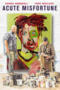 | Acute Misfortune | 2018 | EN | mp4 | 720p | Daniel Henshall, Toby Wallace, Gillian Jones, Genevieve Lemon, Max Cullen, Rowland Holmes, Steve Mouzakis, Joanne Samuel | |
| The Adventures of Priscilla, Queen of the Desert | 1994 | EN | mp4 | 720p | Terence Stamp, Hugo Weaving, Guy Pearce, Bill Hunter, Sarah Chadwick, June Marie Bennett | ||
 |
Against the Law | 2017 | EN | mp4 | 1080p | Daniel Mays, Richard Gadd, Charlie Creed-Miles, Mark Gatiss, Richard Dillane, David Robb, Paul Keating, Mark Edel-Hunt, Josh Collins, Daniel Betts, Timothy Watson, Barney White, James Gaddas, Claire Bond, Matthew Canny, Mark Holgate | |
| Los agitadores | 2022 | ES | mp4 | 720p | Bruno Giganti, Agustín Machta, Franco de la Puente, Iván Masliah, Facundo Mas, Ivan Benitez | ||
| Alex Strangelove | 2018 | EN | mp4 | 1080p | Daniel Doheny, Madeline Weinstein, Antonio Marziale, Daniel Zolghadri, Nik Dodani, Fred Hechinger, Dante Costabile, Annie Q., Kathryn Erbe, Joanna Adler, William Ragsdale, Ayden Mayeri, Isabella Amara, Sophie Faulkenberry, David Fierro | ||
| Alive and Kicking | 1996 | EN | mp4 | 720p | Jason Flemyng, Antony Sher, Dorothy Tutin, Anthony Higgins, Bill Nighy, Diane Parish, Philip Voss, Aiden Waters, Natalie Roles, Freddy Douglas, Kenneth Olumuyiwa Tharp, Michael Keegan-Dolan, Richard Hope, Allan Corduner, Sakuntala Ramanee, Linda Bassett, Ruth Lass, Hilary Reynolds, Dickon Tolson, David Ashton, Annabel Leventon, David Phelan, Dugald Bruce Lockhart, Ian Abbey, Jason Cheater, Marty Cruikshank, Martin Sherman, Frank Boyce, Steven Houghton | ||
| All Kinds of Love | 2022 | EN | mp4 | 1080p | Matthew Montgomery, Cody Duke, Steve Callahan, Nick Salamone, Molly O'Leary, Mark Nordike, Spike Mayer, Michael Dumas, Jerry McDaniel, Marval A Rex | ||
| Altered Innocence Vol. 1 | 2021 | EN | mp4 | 480p | Elina Löwensohn, Félix Maritaud, Kate Moran, Niels Schneider, Pablo Puyol, Jenna Thiam, Jasper Bel, Laurie Reynal, Mila Lendormy, Israel Rodríguez, Marylou Mayniel, Lucas Doméjean, Connor Newall, Csaba Molnár, Gyula Muskovics, Nana Benamer, Tomás Franco, Håvid Kringstad Hagen, Cato Skimten Storengen | ||
| Los amantes pasajeros | 2013 | ES | mp4 | 1080p | Antonio Banderas, Penélope Cruz, Coté Soler, Antonio de la Torre, Hugo Silva, Miguel Ángel Silvestre, Laya Martí, Javier Cámara, Carlos Areces, Raúl Arévalo, La Terremoto de Alcorcón, Nasser Saleh, Concha Galán, José María Yázpik, Guillermo Toledo, José Luis Torrijo, Lola Dueñas, Cecilia Roth, Paz Vega, Blanca Suárez, Susi Sánchez, Carmen Machi, Violeta Pérez, Bárbara Santa-Cruz, María Morales, Agustín Almodóvar | ||
| American Insurrection | 2021 | EN | mp4 | 720p | William Sullivan | ||
| Amphetamine | 2010 | ZH | mp4 | 1080p | Byron Pang, Thomas Price, Linda So, Winnie Leung | ||
| Anak ng Macho Dancer | 2021 | TL | mp4 | 1080p | Sean de Guzman, Allan Paule, Ricky Gumera, Miko Pasamonte, Charles Nathan, Mhack Morales, Jaclyn Jose, Jay Manalo, Rosanna Roces, Emilio Garcia, Jim Pebanco, Lhora Españo, Eisel Serrano, Cloie Sy, Neil Suarez, Ace Toledo, Cloe Barretto | ||
| And the Band Played On | 1993 | EN | mp4 | 1080p | Matthew Modine, Alan Alda, Patrick Bauchau, Nathalie Baye, Christian Clemenson, David Clennon, Phil Collins, Bud Cort, Alex Courtney, David Dukes, Richard Gere, David Marshall Grant, Ronald Guttman, Glenne Headly, Anjelica Huston, Ken Jenkins, Richard Jenkins, Tchéky Karyo, Swoosie Kurtz, Jack Laufer, Donal Logue, Steve Martin, Richard Masur, Dakin Matthews, Ian McKellen, Peter McRobbie, Lawrence Monoson, Jeffrey Nordling, Saul Rubinek, Charles Martin Smith, Stephen Spinella, Lily Tomlin, BD Wong, Walter Addison, Jill Andre, Alan Barry, Neal Benari, David Dean Bottrell, Rico Bueno, Bill Carmichael, Christopher Carroll, Reg E. Cathey, John Del Regno, John Durbin, Mogens Eckert, Carey Eidel, Robert Briscoe Evans, Richard Fancy, Keythe Farley, Christopher John Fields, Dave Florek, Niki Guluchi, Yasmine Golchan, Patrick Gorman, James Greene, Jeff Hayenga, Daniel Henning, Ike Ikediashi, Laura Innes, Laura James, Michael Kearns, Erasor Kemie, Jack Kenny, Thomas Kopache, Clyde Kusatsu, Frank Li'Bay, Rob LaBelle, Neal Lerner, René Le Vant, Geoff Lower, Anthony Lucero, James Mastrantonio, Jon Matthews, Rosemary Murphy, Susanne Olsen, Angela Paton, Sierra Pecheur, Miguel Pérez, Martin Raymond, Jeremy Regan, Robert Martin Robinson, Valeri Ross, Hildur Ruriks, Tom Schanley, Sean Whitesell, Michael Winters, William Wintersole, Lenny Wolpe | ||
| Angels With Tethered Wings | 2014 | EN | mp4 | 720p | Cory Tyndall, Brandon Rife, Addison Graham, Trip Langley, Naiia Lajoie | ||
| 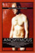 | Anonymous | 2004 | EN | mp4 | 480p | Todd Verow, Dustin Schell, Jason Bailey, Noah Powell, Shawn Durr, Sophia Lamar, Philly Abe, Craig Chester, Lee Kohler, Florian Sachisthal, Elliott Kennerson | |
| Another Country | 1984 | EN | mp4 | 1080p | Rupert Everett, Colin Firth, Michael Jenn, Robert Addie, Rupert Wainwright, Cary Elwes, Tristan Oliver, Anna Massey, Philip Dupuy, Guy Henry, Adrian Ross Magenty, Geoffrey Bateman, Frederick Alexander, Jeffry Wickham, Gideon Boulting, Llewellyn Rees, Ivor Roberts, Crispin Redman, Nicholas Rowe, Betsy Brantley, Kathleen St John, Martin Wenner, Christopher Milburn, Tristram Jellinek, Tristram Wymark, Ralph Perry-Robinson, Arthur Howard | ||
| Another Gay Movie | 2006 | EN | mp4 | 1080p | Michael Carbonaro, Jonah Blechman, Jonathan Chase, Mitch Morris, Ashlie Atkinson, Scott Thompson, Graham Norton, Angela Oh, Darryl Stephens, George Marcy, Matthew Rush, Stephanie McVay, John Epperson, James Getzlaff, Andersen Gabrych, Richard Hatch, Joanna Leeds, Robert Laughlin, Ant, Alyshia Ochse, Willy Roberts, Jesse Daly, David A. Dunham, Thomas Colby | ||
| Another Gay Sequel: Gays Gone Wild! | 2008 | EN | mp4 | 720p | Jonah Blechman, Jake Mosser, Aaron Michael Davies, Jimmy Clabots, Euriamis Losada, Perez Hilton, RuPaul, Will Wikle, Brandon Lim, Isaac Webster, Andersen Gabrych, Brent Corrigan, Ellen Jacoby, Willam Belli | ||
| Another Yeti a Love Story: Life on the Streets | 2017 | EN | mp4 | 1080p | Adam Malamut, Dave Zakheim, Michael Price, Phoenix Askani, Whitney Moore, Jim Martin, Thom Sigsby, Chris Nelson, Marissa Merrill, Liryc Suicide, Josh Androsky, Tommy Pistol, Eric Gosselin, Sean Keller, Michael Varrati, Lloyd Kaufman | ||
 |
Anton LaVey: Into the Devil's Den | 2019 | EN | mp4 | 1080p | Anton LaVey, Blanche Barton, Peter H. Gilmore, Peggy Nadramia, Robert Johnson, Kenneth Anger | |
| Any Day Now | 2012 | EN | mp4 | 720p | Alan Cumming, Garret Dillahunt, Isaac Leyva, Frances Fisher, Gregg Henry, Jamie Anne Allman, Chris Mulkey, Don Franklin, Kelli Williams, Alan Rachins, Mindy Sterling, Doug Spearman, Randy Roberts, Miracle Laurie, Michael Nouri | ||
| Arizona Sky | 2008 | EN | mp4 | 720p | Eric Dean, Blaise Godbe Lipman, Kyle Buckland, Jayme McCabe, Patricia Place, Evan Cuthbert, Brent King, Emerson Smith, Bernadette Murray | ||
| The Art of Being Straight | 2008 | EN | mp4 | SD | Johnny Ray, Rachel Castillo, Jim Dineen, Jared Grey, Jesse Janzen, Tyler Jenich, Alan LaPolice, Bryan McGowan, Anne Reeder, Emilia Richeson, Jesse Rosen, Dana Salah, Pete Scherer, Jen Zaborowski | ||
 |
Available Light | 2015 | TL | mp4 | 720p | Todd Verow, Matt Sizemore, Valentin Plessy, Jon John, Stevie Hanley, Yann de Monterno, Philly Abe, Rob Ordonez, Max Tatted, Jed Ryan, Mike Dreyden, Michael Vaccaro, David J. White, Joe Wakeman | |
| Baby Jane? | 2010 | EN | mp4 | 480p | Matthew Martin, J. Conrad Frank, Alotta Boutte, Vincent De Paul, Mike Finn, Jeff Dylan Graham, Heklina, Kim Larsen, Mister Lobo, Shelby Lyon, Gentry McShane, Mark Sargent, Jordan Shamsaee, Ron Herman Symansky, Drew Todd | ||
| Bad Boy Street | 2012 | EN | mp4 | 720p | Florence d'Azémar, Yann de Monterno, Kevin Miranda, Todd Verow | ||
| Bad Medicine | 2015 | EN | mp4 | 720p | Ian Grey, Aitor Bravo | ||
| El baile de los 41 | 2021 | ES | mp4 | 1080p | Alfonso Herrera, Emiliano Zurita, Fernando Becerril, Mabel Cadena, Paulina Álvarez Muñoz, Rodrigo Virago, Fernanda Echevarría, Sergio Solís, Álvaro Guerrero, Roberto Duarte, Abraham Juárez | ||
| Bayaw | 2009 | EN | mp4 | 480p | Paolo Rivero, Janvier Daily, Andrew Miguel | ||
| Beach Rats | 2017 | EN | mp4 | 1080p | Harris Dickinson, Madeline Weinstein, Kate Hodge, Neal Huff, Nicole Flyus, Frank Hakaj, David Ivanov, Anton Selyaninov, Harrison Sheehan, Douglas Everett Davis, Gabriel Gans, Erik Potempa, Kris Eivers, J.Stephen Brantley | ||
| 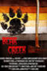 | Bear Creek | 2017 | EN | mp4 | 720p | Leana Lewis, Elijah Barrett, Christopher Thomas Robert Brown | |
| BearCity | 2010 | EN | mp4 | 480p | Joe Conti, Stephen Guarino, Gerald McCullouch, Alex Di Dio, James Martinez, Sebastian La Cause, Gregory Gunter, Fernando Mateo Jr., Kevin E. Smith, Ashlie Atkinson, Will Bethencourt, Michael Hartney, Vayu O'Donnell, Peter Stickles, Joe Zaso, Jack Bethke, Michael Musto, Elli, Joe Mannetti, Randy Jones | ||
| 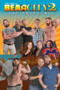 | BearCity 2: The Proposal | 2012 | EN | mp4 | 480p | Joe Conti, Gerald McCullouch, Stephen Guarino, James Martinez, Gregory Gunter, Brian Keane, Alex Di Dio, Kevin Smith, Kathy Najimy, Richard Riehle, Jason Stuart, Mike Ruiz, Will Bethencourt, Johnny Scruff, Jesse Leonard, Malcolm Ingram, Jeffery Roberson, Douglas Langway, Tim Hooper | |
| 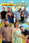 | BearCity 3 | 2016 | EN | mp4 | 720p | Briane Keane, Stephen Guarino, Gerald McCullouch, Gregory Gunter, Kathy Najimy, Garikayi Mutambirwa, Lauryn McClain, Joe Conti, Tim Hooper | |
| Beautiful Thing | 1996 | EN | mp4 | 1080p | Linda Henry, Glen Berry, Scott Neal, Tameka Empson, Ben Daniels, Meera Syal, Garry Cooper, Andrew Fraser, John Savage, Jeillo Edwards, Terry Duggan, Anna Karen, Julia-Lee Smith, Daniel Bowers, Martin Walsh, Jonathan Harvey, Marlene Sidaway, John Benfield | ||
| Bedtime Stories: After Cherries | N/A | EN | mp4 | 1080p | Sultan of Filth, Shay Noir | ||
| Bedtime Stories: Asphyxia | 2021 | EN | mp4 | 1080p | Isaak Rion, Rufus Bright | ||
| Bedtime Stories: Blissing Deal | 2020 | EN | mp4 | 1080p | Isaak Rion, Sabbah | ||
| Bedtime Stories: Dear Father | 2020 | EN | mp4 | 1080p | Pierre Emö, Frank Bertram | ||
| Bedtime Stories: Minha Luta | 2020 | EN | mp4 | 1080p | Fernando Flores, Messiah Horta | ||
| Bedtime Stories: Obituary | 2020 | EN | mp4 | 1080p | Bishop Black, Gany Meat | ||
| Bedtime Stories: Only Friends | 2021 | EN | mp4 | 1080p | Francisco Gabriel, Pau Alonso, Enol Domènech | ||
| Been Too Long at the Fair | 2015 | EN | mp4 | 1080p | Charles Lum, Joe Wakeman, David J. White, Paul Wirhun | ||
| 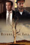 | Before the Fall | 2017 | EN | mp4 | 1080p | Ethan Sharrett, Chase Conner, Brandi Price, Jason Mac, Jonathan Horvath, Morgan Sharrett, Angela Dannhardt, Carol Marie Rinn | |
| Before the Night Is Over | 2020 | EN | mp4 | 720p | Samantha Acampora, Bruce Church, Lee Rush, Jay Walker, Graham Stokes, Ricky Irizarry, Derek Laurendeau, Cardryell Truss | ||
| Behind The Candelabra | 2013 | EN | mp4 | 720p | Michael Douglas, Matt Damon, Rob Lowe, Dan Aykroyd, Scott Bakula, Debbie Reynolds, Cheyenne Jackson, Paul Reiser, Boyd Holbrook, Nicky Katt, Eddie Jemison, Mike O'Malley, Josh Meyers, David Koechner, Krystal Ellsworth | ||
| Bello | 2021 | ES | mp4 | 1080p | Francisco Gabriel, Vinicius Coelho, Carla Berrocal | ||
| Beneath The Skin | 2015 | EN | mp4 | 1080p | Aaron Ellis, Justin Liles, Jamie Knox, Wayne Virgo, Lauren Falconer, Rachel Walters, Mike Collins, Jake Davies, Abbie Mason, Andy Sechi, Allan Yates | ||
 |
Benediction | 2021 | EN | mp4 | 1080p | Jack Lowden, Peter Capaldi, Simon Russell Beale, Jeremy Irvine, Calam Lynch, Tom Blyth, Kate Phillips, Geraldine James, Gemma Jones, Ben Daniels, Edmund Kingsley, Harry Lawtey, Anton Lesser, Lia Williams, Suzanne Bertish, Jude Akuwudike, Joanna Bacon, Stacey Lynn Crowe, Thom Ashley, Jamie-Lee Beacher, Paddy Rowan, Matthew Tennyson, David Shields, Julian Sands, Edward Bennett | |
| Benjamin | 2019 | EN | mp4 | 720p | Colin Morgan, Phénix Brossard, Joel Fry, Jessica Raine, Jack Rowan, Anna Chancellor, Nathan Stewart-Jarrett, Michèle Belgrand, James Lailey, Ellie Kendrick, Mark Kermode, Simon Mayo | ||
| Bent | 1998 | EN | mp4 | 720p | Lothaire Bluteau, Clive Owen, Brian Webber, Ian McKellen, Mick Jagger, Paul Bettany, Paul Kynman, Rupert Graves, Nikolaj Coster-Waldau, Jude Law, Richard Laing, Crispian Belfrage, Stefan Marling, Suzanne Bertish, Gresby Nash, David Meyer, Johanna Kirby, David Phelan, Holly Davidson, Peter Stark, Charlie Watts, Rupert Penry-Jones, Rachel Weisz, Geraldine Sherman, Sadie Frost, Lou Gish, Mary Davidson, Simon Hammerstein, Johan Johnstone, Chris Karlitz, Mark Misauer, Howard Sacks, Mandy Stone, William Stone, Daisy de Villeneuve, Poppy de Villeneuve, Jan de Villeneuve, Helen Whitehouse, Zed, Wayne McGregor | ||
| Best Day Ever | 2014 | EN | mp4 | 1080p | Mel England, Tom Saporito, Peter Stickles, Ace Lundon, Nate Moore | ||
| Between Something & Nothing | 2008 | EN | mp4 | 480p | Tim Swain, Robert Axel, Gil Bar-Sela, Theodore Bouloukos | ||
| Beyto | 2021 | DE | mp4 | 1080p | Burak Ates, Dimitri Stapfer, Ecem Aydin, Beren Tuna, Serkan Tastemur | ||
| Big Eden | 2000 | EN | mp4 | 1080p | Arye Gross, Eric Schweig, Tim DeKay, Louise Fletcher, Nan Martin, O'Neal Compton, George Coe | ||
| The Birdcage | 1996 | EN | mp4 | 720p | Robin Williams, Gene Hackman, Nathan Lane, Dianne Wiest, Grant Heslov, Hank Azaria, Dan Futterman, Calista Flockhart, Christine Baranski, Tom McGowan | ||
| Blackmail Boys | 2010 | EN | mp4 | 480p | Nathan Adloff, Taylor Reed, Joe Swanberg, Danny Rhodes, Tamara Fana, Nostrebla Navi | ||
| Blood for Dracula | 1974 | EN | mp4 | 1080p | Udo Kier, Joe Dallesandro, Vittorio De Sica, Maxime McKendry, Arno Juerging, Milena Vukotić, Dominique Darel, Stefania Casini, Silvia Dionisio, Roman Polanski, Inna Alexeievna, Gil Cagnè | ||
| Blood Red Ox | 2021 | EN | mp4 | 720p | Mazin Akar, Kaolin Bass, Andrea Camponovo, Vitorio Lema, Idalmis García, Julián Mercado, Miguel Michel, Ana Domínguez | ||
| Borstal Boy | 2001 | EN | mp4 | 576p | Shawn Hatosy, Danny Dyer, Robin Laing, Eva Birthistle, Michael York, Mark Huberman, Lee Ingleby, Ronnie Drew | ||
| Bottom | 2012 | EN | mp4 | 480p | Todd Verow | ||
| Boy Culture | 2006 | EN | mp4 | 576p | Derek Magyar, Jonathon Trent, Darryl Stephens, Patrick Bauchau, George Jonson, Peyton Hinson, Kyle Santler, Emily Brooke Hands, Matt Riedy, Clifford Harrington | ||
| Boy Culture the Series | 2021 | EN | mp4 | 720p | Derek Magyar, Darryl Stephens, Jason Caceres, Jonathan Lisecki, Joel Michaely, Jojo Guadagno, Steve Grand, Todd Lien | ||
| Boy Erased | 2019 | EN | mp4 | 1080p | Lucas Hedges, Nicole Kidman, Russell Crowe, Joel Edgerton, Joe Alwyn, Xavier Dolan, Troye Sivan, Cherry Jones, Flea, Jesse LaTourette, Britton Sear, Théodore Pellerin, Emily Hinkler, David Ditmore, Matt Burke, William Ngo, Lindsey Moser, David Joseph Craig, Victor McCay, Tim Ware, Madelyn Cline, Josh Scherer, Frank Hoyt Taylor, Jason Davis, Kevin Linehan, Paige Henry, Malerie Grady, Will Kindrachuk, Drew Scheid, Jesse Malinowski, Joy Jacobson, Randy Havens | ||
| Boy Meets Boy | 2021 | EN | mp4 | 720p | Matthew J. Morrison, Alexis Koutsoulis Louis Labron Johnson, Hanno Jusek Gregor Schalper, Marcel Mayer | ||
| The Boy With The Sun In His Eyes | 2009 | EN | mp4 | 480p | Tim Swain, Mahogany Reynolds, Josh Ubaldi, Valentin Plessy, Yann de Monterno | ||
| Boys Briefs | 1999 | EN | mp4 | 480p | Gary Cohen, Victor Garber, Mateo Gómez, Diego Lopez, Sam McConnell, Joe Policek, Joe Quintero | ||
| Boys Briefs 2 | 2002 | EN | mp4 | 480p | Danny Roberts, Gwen Bailey, Paul Bettis, Martha Ferguson, Brendan Fletcher, David Gardner, Cassandra Hanrahan, Mark Harapiak, Emily Herstun, Randy Hughson, Sherrie Johnson, Jacoba Knaapen, Daniel MacIvor, Milo Puerta, Pablo Puyol, Diego Shea, Fiona Highet, Aron Tager | ||
| Boys Briefs 3: Between the Boys | 2006 | EN | mp4 | 480p | Jarrah Gurrie | ||
| Boys Briefs 4 | 2006 | EN | mp4 | 480p | Timothy Lee DePriest, PJ Lazic, Caroline Lesley, Darryn Lucio, Greg Atkins, Nancy Beatty, Bryan Bevege, John Carson, Garnet Harding, Salim Kechiouche, Sebastian Lamour, Amanda Lear, Jesse Lee, Milan Malero, Bryan Marshall | ||
| Boys Briefs 5: Schoolboys | 2008 | EN | mp4 | 480p | Daniel Ribeiro, Jeff Warden, Lisa Marie Gamlem, Magnus Mork, Dave Snyder, Soman Chainani | ||
 |
The Boys in the Band | 2020 | EN | mp4 | 720p | Jim Parsons, Zachary Quinto, Matt Bomer, Andrew Rannells, Michael Benjamin Washington, Robin de Jesús, Tuc Watkins, Charlie Carver, Brian Hutchison, Brian Dole, Marc Basil, Jack O'Connell, Walter Cox, Tina Fabrique, Tyler Miles, John DeLuca, Julia Parker, Paul Chirico, Derrick Simmons | |
| The Boys In The Band | 1970 | EN | mp4 | 720p | Leonard Frey, Frederick Combs, Cliff Gorman, Laurence Luckinbill, Keith Prentice, Kenneth Nelson, Peter White, Reuben Greene, Robert La Tourneaux | ||
| Boys Night | 2021 | EN | mp4 | 720p | Tony Clemente Jr, Anna Maguire, Christopher Sampson, Linus Ignatius, Brock Cravy, Alice Maio Mackay | ||
| The Boys of Cellblock Q | 1992 | EN | mp4 | 480p | Andrew Addams, Lewis Alante, Slade Burrus, Larry Maraviglia, Ken Merckx, David Sochet, John Topping, Michael Valdes, Damian Perkins, Danny Parr | ||
| Boys on Film 1: Hard Love | 2009 | EN | mp4 | 576p | Chris Anderson, Brad Bilanin, Roy Billing, Eric Debets, Flannan Obé, Jonathan Blanc, Peter Travis, Glenda Waverley, David Wain, Jay Brown, Peter Peralta, Omar, Fernando Peres, Val Rassi, Lara Cazalet, David Durham, Benjamin Merran, Jones Carlos Fialho de Araújo, Govinda Machado de Figueiredo, Ronald Rosa, Patativa Flower, Raisa, Marcus Proctor, Jeff Chandler, Kimmy Eyre-Varnier | ||
| Boys on Film 2: In Too Deep | 2009 | EN | mp4 | 576p | Oliver Scherz, Pit Bukowski, Isabelle Höpfner, Tobias Bengtsson, Tom Lofterud, Jean-Claude Dumas, Théo Frilet, Pierre Moure | ||
 |
Boys on Film 3: American Boy | 2009 | EN | mp4 | 576p | Josh Caras, Donald Cumming, Eléonore Hendricks, Adam Fleming, Michael Cassidy, Marla Burkholder | |
| Boys on Film 4: Protect Me from What I Want | 2010 | EN | mp4 | 576p | Nils Althaus, Brett Barsky, Murray Bartlett, Naveed Choudhry, Yannick de Waal, Daniel Dugan, Roeland Fernhout, Jaime Freitas, Halldór Gylfason, Björn Ingi Hilmarsson, Scott Hislop, Judy Kain, John Lizzi, Adam Lundgren, José Manuel Mendes, Moo Miero, Jonas Rimeika, Elliott Tittensor, Jonas Ullmann, Julien Zeitouni | ||
| Boys On Film 5: Candy Boy | 2010 | EN | mp4 | 576p | Julien Gauthier, Jean Haas, Gilles Guillain, Tony Granger, Alexis Michalik, Marie-Christine Darah, Julien Bouanich, Aymen Saïdi, Chloé Berthier, Heath Daniels, Matthew Bridges, Michael Estime, Korken Alexander, Drew Droege, Iva Turner, David Paisley, Tom Frederic, Tom Swash, Travis Dixon, David Devora, Jody Jaress, Nick Soper, Art Gager, George Loomis, Alfonso David, Pedro Campos, Paula Zúñiga, María de Los Ángeles García, Pablo Macaya, Trinidad González, Niall Wright, Matthew Jennings, Margaret Goodman, Gerry Doherty, Jorge Adrián Espíndola, Javier Escobar | ||
| Boys on Film 6: Pacific Rim | 2011 | EN | mp4 | 576p | Miles Szanto, Xavier Samuel, Tess Haubrich, Bren Foster, Callan McAuliffe, John Batchelor, Diana Glenn, Nick Shen, Scott Lei, Yann Yann Yeo, Pierre Goh, Brian Moore, Chris Tempest, Alan Granville, Do-jin Kim, Jae-won Kwak, Se-Hyun Yun, Sun-joo Lee, Lee Kyoo-hyung, Toby Schmitz, Joel McIlroy, Marc Gallagher, Darcy Prendergast, Thea Matsuda, Tessie Magaoay, Cari Mizumoto, Michael Hsia | ||
| Boys on Film 7: Bad Romance | 2011 | EN | mp4 | 576p | Jan Andreesen, Liane Balaban, Julie Beauchemin, Danny Bernardy, Manuela Biedermann, David Call, Alexander Campbell, Tobias Campbell, Anton Ciurlia, Kevin Corrigan, Vincent D'Onofrio, Stéphane Demers, Xavier Dolan, Benjamin Décosterd, Zvika Fohrman, Su-hee Go, Shmulik Goldstein, Davidi Hoffman, Guy Kapulnik, Richard Lambeth, Lee Chae-eun, Rebecca Pappa, Bartholomew Sammut, Tomer Velkoff, Rudi Vodanovich, Merritt Wever, Matthew Wilkas, Yeon Woo-jin | ||
 |
Boys on Film 8: Cruel Britannia | 2012 | EN | mp4 | 576p | Mandy Aldridge, Layke Anderson, Geoff Bell, Mark Benton, Tristan Bernays, Di Botcher, Jamie Brotherston, Krystina Coates, Linzey Cocker, Tim Dantay, Harry Eden, Paloma Faith, Ray Fearon, Jonathan Firth, Frank Gallagher, Helen Grady, Rez Kabir, Jonathan Keane, David Leon, Calum MacNab, Eddie Marsan, Gemma Morrison, Chris O'Donnell, Hussina Raja, Iwan Rheon, Alexander Scott, Neeraj Singh, Lauren Steventon, Michael Twaits, Eddie Webber, Ross William Wild | |
| Boys On Film 9: Youth In Trouble | 2013 | EN | mp4 | 576p | Bailey Maughan, Gharrett Patrick Paon, Denis Theriault, Max Humphreys, Cláudia Assunção, Kauê Telloli, Ney Piacentini, Thiago Franco Balieiro, Thiago Pinheiro, Johnnas Oliva, Lucas Hansen, Ben Owora, Stuart Evans, Mario Casas, Ales Furundarena, Christian Mulas, Reef Ireland, Luke Mullins, Frank Sweet, Shannon Glowacki, Richard Anastasios, Cornell John, Said Mohamed, Malivaï Yakou, Finnegan Oldfield, Leïla Choukri, Garance Marillier | ||
| Boys on Film 11: We Are Animals | 2014 | EN | mp4 | 576p | Cody Fern, Richard Ballon, Akram Akbari, Zaman Ahmadi, Matthew Ashford, Daniel Boys, Spencer Broschard, Drew Droege, Darren Evans, Dylan Harman, David Hempstead, Martin L. Washington Jr., Morten Kirkskov, Daniel Landroche, Ron Lea, Ben Lerman, Barret Lewis, Simon Munk, Clint Napier, Walter Replogle, Nathan Tetreault, Jamie Thompson, Toby Wallace | ||
| Boys on Film 12: Confession | 2014 | EN | mp4 | SD | Jake Robbins, Lucas Pittaway, Malcolm Kennard, Richie Finger, Stephanie King, Matt Levett, Airlie Dodds, Gharrett Patrick Paon, Michael Gaty, Alyse Hand, Sean Skerry, Fonya Irvine, Brooke MacDonald, Carson Trinity Haverda, Greg Baglia, Charles Basham, Keturah Branch, Fabio Foiada, Ignazio Oliva, Laura Minazzi, Kevin Martinetti, Thomas Coumans, Adrien Desbons, Caleb James, Neil Elliot, Christian Patrick, Peter Knegt, Oliver Skinner | ||
| Boys on Film 13: Trick & Treat | 2015 | EN | mp4 | SD | Austin Fryberger | ||
| Boys on Film 14: Worlds Collide | 2016 | EN | mp4 | 1080p | Adrián Alonso Barona, Mojean Aria, Alexandré Barceló, Jefferson Brito, Jamie Andrew Cutler, Andrew Flores, Dennis Garcia, Jake Graf | ||
| Boys on Film 15: Time & Tied | 2016 | EN | mp4 | 720p | Amrou Al-Kadhi, Nigel Allen, Ashley Campbell, Marc Kibo Rovira Cenar, Neil Chinneck, Craig Daniel, Tom Frederic, Nicole Gibson, Nicholas Gleaves, Jack Hawkins, Florian Klein, Tommy Knight, Leon Lopez, Kumar Muniandy, Ceallach Spellman | ||
| Boys on Film 16: Possession | 2017 | EN | mp4 | SD | Kai Stänicke, Anthony Schatteman, Andrew Keenan-Bolger, Blake Mawson, Jake Graf, Björn Elgerd, Christopher Manning, Charlie Francis, Oliver Mason | ||
| Boys on Film 17: Love Is the Drug | 2017 | EN | mp4 | 480p | Pearce Joza | ||
| 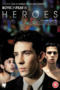 | Boys on Film 18: Heroes | 2018 | EN | mp4 | 720p | Jason Barker, Ciara Baxendale, Daniel Cornelissen, Csémy Balázs, Jana Bringlöv Ekspong, Björn Elgerd, Karl-Erik Franzén, Henry Garrett, Volkmar Leif Gilbert, Alexander Gustavsson, Sean Hart, Mollie Lambert, Éva Magyar, Tobias Nierop, Josh O'Connor, Julia Wentzel Olsen, Jacob Ottensten, Patrick Sonberger, Alberto Venceslau, Ulrik Windfeldt-Schmidt | |
| Boys On Film 19: No Ordinary Boy | 2019 | EN | mp4 | 576p | David Färdmar, Leon Lopez, Jake Graf, Jannik Splidsboel, Amrou Al-Kadhi, Dean Loxton, Abhishek Verma, Marco Alessi, Ben Allen, Scott T. Hinson | ||
| Boys on Film 20: Heaven Can Wait | 2020 | EN | mp4 | 720p | Jay Russell, Layke Anderson, Chintis Lundgren, Matthew Jacobs Morgan, Zoe McIntosh, Christopher Manning, Timothy Ryan Hickernell, Jimi Vall Peterson, Mickey Jones, Bassem Ben Brahim, Dale John Allen | ||
| Boys on Film 21: Beautiful Secret | 2021 | EN | mp4 | 576p | Jason Bradbury, Sam Peter Jackson, Zachary Ayotte, George Dogaru, Theo James Krekis, Joe Morris, Loïc Hobi, Abel Rubinstein, Pierce Hadjinicola, Sinclair Suhood | ||
| Boys on Film 22: Love to Love | 2022 | EN, ES, PT | mp4 | 1080p | Ben Aldridge, Simon Lennon, Samuel Barnett, Julio Aracack, Pabel Castañeda, Pierre Emö, Taofique Folarin, Ian Hallard, Matt Jennings, Cyril Nri, Michel Pereira, Stanton Plummer-Cambridge, Anthony Sorrells, Mark Wax | ||
| Boys on Film Presents: Campfire | 2017 | EN | mp4 | 480p | Bavo Defurne | ||
| Boys on Film X | 2013 | EN | mp4 | 576p | Nathaniel Brown, Byrdie Bell, Luke Worrall, Jelle Florizoone, Thomas Coumans | ||
| Bramadero | 2007 | ES | mp4 | 720p | Sergio Almazán, Cristhian Rodríguez | ||
| The Breeding | 2018 | EN | mp4 | 480p | Marcus Bellamy, Patrick Kuzara, Joe Macdougal, David J. Cork, Dedrick Anthony, Linda Manning, Drew Allen | ||
| Bridegroom | 2013 | EN | mp4 | 720p | Thomas Bridegroom, Shane Bitney Crone, Cindy Bitney, David Crone, Lizzy Mohl, Judy Crone, Pat Managhan, Jessica Mitchell, Sasha Andreev, Chelsea Cannell, Rick Corner, Scott Davis, Jeanni Goldfarb, Paul Goretski, Allison Gray, Alexandra Grossi, Tami Kampf, Karen Jacobson, Erin Linsin, Coleen McMahon, Michaela Myers, Josh Lopour, Jelsa Paladino, Mark Runkle, Lizzy Sherman, Amanda Simpson, Mark Stine, Brandon Thomas, William Ngo | ||
| Brideshead Revisited | 2008 | EN | mp4 | 1080p | Matthew Goode, Ben Whishaw, Hayley Atwell, Emma Thompson, Michael Gambon, Patrick Malahide, Ed Stoppard, Greta Scacchi, Anna Madeley, Jonathan Cake, Richard Teverson, Joseph Beattie, Felicity Jones, Rita Davies, Tom Wlaschiha, Niall Buggy, Sarah Crowden, Susan Brown | ||
| Britain's Great Gay Buildings | 2017 | EN | mp4 | 1080p | Waheed Alli, Rikki Beadle Blair, Simon Callow, Liz Carr, Richard Coles, Stephen Fry, Craig Revel Horwood, Mary Portas | ||
| Brokeback Mountain | 2005 | EN | mp4 | 720p | Heath Ledger, Jake Gyllenhaal, Randy Quaid, Michelle Williams, Anne Hathaway, Larry Reese, Valerie Planche, Marty Antonini, Linda Cardellini, Anna Faris, Kate Mara, Dave Trimble | ||
| The Broken Hearts Club: A Romantic Comedy | 2001 | EN | mp4 | 1080p | Timothy Olyphant, Zach Braff, Ben Weber, Dean Cain, Billy Porter, Matt McGrath, Justin Theroux, Andrew Keegan, Chris Payne Gilbert, John Mahoney, John Brandon, Nia Long, Mary McCormack, Diane McBain, Jennifer Coolidge, Kerr Smith, Nora Burns, Michael Bergin, Christopher Wiehl, David Youse, Brian Gaskill, Robert Arce, Chris Weitz, Christian Kane, Ken Kerman, Kevin Cooney, Paul Weitz, Charlie Weber, Matt Reid | ||
| Bros | 2022 | EN | mp4 | 1080p | Luke Macfarlane, Billy Eichner, Monica Raymund, Guy Branum, Jim Rash, Guillermo Díaz, Ts Madison, Dot-Marie Jones, Debra Messing, Amanda Bearse, Jai Rodriguez, Eve Lindley, Peter Y. Kim, Justin Covington, Symone, Ryan Faucett, Miss Lawrence, Becca Blackwell | ||
| Brotherly | 2008 | EN | mp4 | 480p | Kevin Fabian, Malcolm McRae, Mathis Fender, Jonathan Robert Kaplan, Lisa Michel | ||
| Buddies | 2019 | EN | mp4 | 480p | Geoff Edholm, David Schachter, Libby Saines, David Rose, Billy Lux, Joyce Korn, Susan Schneider, Tracy Vivat | ||
| Buffering | 2011 | EN | mp4 | SD | Alex Anthony, Conner Mckenzy, Jessica Matthews, Oliver Park, Bernie Hodges, Ryan Spong | ||
| Bulldog in the White House | 2006 | EN | mp4 | 480p | Theodore Bouloukos, Michael Burke, Jono Mainelli, Bryan Safi, Todd Verow | ||
| C.O.G. | 2013 | EN | mp4 | 1080p | Jonathan Groff, Troian Bellisario, Corey Stoll, Dale Dickey, Dean Stockwell, Casey Wilson, Danny Belrose, Tommy Hestmark, Denis O'Hare, Tyra Richards, Beth Furumasu, Keiko Green, Kamyar Jahan, Zachary Vitale, Marvella McPartland, Tim Patteron, Blake Lindsley, Eloy Méndez, Cami Marie, Dana Millican, Louis Hobson, Vu Pham, Castillo Morales, Lara Baker, Teresa Wells Jones, Ellen Bloodworth, Sean Ghazi, Brennan Sprecher, Alexander Chapin-Plata, Bob Olin, Katy Beckemeyer, Gloria Alvarez, Julie Groff, Jewel Robinson, Jennifer Oswald, Kim Bissett, Simos Kalivas, Karli Klein, Katie Klein, Timothy Levine, Diego Sanchez, Asha Sawyer, Tyron Strickland, Jeremy Evan Taylor | ||
| The Cable Guy | 2016 | EN | mp4 | 1080p | Chris Michaels, Matthew Anders | ||
| La Cage aux folles | 1978 | FR | mp4 | 1080p | Ugo Tognazzi, Michel Serrault, Claire Maurier, Michel Galabru, Venantino Venantini, Rémi Laurent, Carmen Scarpitta, Benny Luke, Luisa Maneri, Martine Messager | ||
 |
La Cage aux folles 2 | 1980 | FR | mp4 | 1080p | Ugo Tognazzi, Michel Serrault, Marcel Bozzuffi, Michel Galabru, Paola Borboni, Benny Luke, Giovanni Vettorazzo, Glauco Onorato | |
| La cage aux folles 3 - 'Elles' se marient | 1985 | FR | mp4 | 576p | Ugo Tognazzi, Michel Serrault, Antonella Interlenghi, Michel Galabru, Saverio Vallone, Benny Luke, Stéphane Audran, Gianluca Favilla, Umberto Raho | ||
| Cal | 2013 | EN | mp4 | SD | Wayne Virgo, Tom Payne, Emily Corcoran, Lucy Russell, Daniel Brocklebank, Bernie Hodges, Richard Cambridge, Garry Summers, Simon Cook | ||
| Caligula | 1979 | EN | mp4 | 720p | Malcolm McDowell, Teresa Ann Savoy, Helen Mirren, Peter O'Toole, John Gielgud, Paolo Bonacelli, Guido Mannari, Giancarlo Badessi, John Steiner, Bruno Brive, Anneka Di Lorenzo | ||
 |
Call Me a Ghost | 2017 | EN | mp4 | 720p | Valentin Braun, Pierre Emö | |
 |
Call Me by Your Name | 2017 | EN | mp4 | 1080p | Timothée Chalamet, Armie Hammer, Michael Stuhlbarg, Amira Casar, Esther Garrel, Victoire Du Bois, Vanda Capriolo, Antonio Rimoldi, Elena Bucci, André Aciman, Peter Spears, Marco Sgrosso, Xhuliano Ujka | |
| Capital Games | 2013 | EN | mp4 | 480p | Rebekah Apodaca, Lena Ann Balambao, Cristo Cabrera, Paul Caster, Julian Cordova, Gregor Cosgrove, Kerryanne Devine, Dewitt Duncan, Chuck Erickson, Corinne Fox, Scott Herald, Dion Hindi, Bob Hosko, Patricia Jimenez, Shane Keough, Eric Presnall | ||
| Caravaggio | 1986 | EN | mp4 | 720p | Nigel Terry, Tilda Swinton, Sean Bean, Spencer Leigh, Robbie Coltrane, Michael Gough, Garry Cooper, Dexter Fletcher, Nigel Davenport, Dawn Archibald, Jack Birkett, Vernon Dobtcheff, Jonathan Hyde, Zohra Sehgal, Simon Fisher-Turner, Lol Coxhill, Sadie Corre, Terry Downes, John Rogan, Derek Jarman | ||
| Cas | 2016 | EN | mp4 | 1080p | Wieger Windhorst, Kevin Hassing, Felix Meyer, Yootha Wong-Loi-Sing, Job Raaijmakers, Kristel van Grunsven, Bruno Prent, Deliana Achthoven, Ferinho Jubitane, Michael Schnörr | ||
| El cazador | 2020 | EN | mp4 | 720p | Juan Pablo Cestaro, Lautaro Rodríguez, Juan Barberini, Patricio Rodríguez, Luis Margani, Antonia De Michelis, Tomás Agüero, Cecilia Cósero, Luciano Suardi, Malena Irusta, Javier De Pietro, Felipe González Otaño, Franco Marani, Germán Frías, Denis Corat, Carmela Sandberg, Juan Ignacio Farías, Gala Núñez, Agustín Bel, Carolina Erlich, Juan Pablo Tunesi, Damián Borda | ||
| 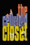 | The Celluloid Closet | 1996 | EN | mp4 | 1080p | Lily Tomlin, Tony Curtis, Susan Sarandon, Gore Vidal, Whoopi Goldberg, Antonio Fargas, Shirley MacLaine, John Schlesinger, Armistead Maupin, Arthur Laurents, Tom Hanks, Farley Granger, Quentin Crisp, Harry Hamlin, Sharon Stone, Susie Bright, Mart Crowley, Jay Presson Allen, Richard Dyer, Jan Oxenberg, Paul Rudnick, Barry Sandler, Ron Nyswaner, Daniel Melnick, Stewart Stern, Harvey Fierstein, Paul Newman | |
| Children of God | 2011 | EN | mp4 | SD | Johnny Ferro, Stephen Tyrone Williams, Margaret Laurena Kemp, Van Brown, Leslie Vanderpool, Mark Ford, Craig Pinder | ||
| The Children's Hour | 1961 | EN | mp4 | 1080p | Audrey Hepburn, Shirley MacLaine, James Garner, Miriam Hopkins, Fay Bainter, Veronica Cartwright, Karen Balkin, Sally Brophy, Mimi Gibson, Jered Barclay, William Mims, Hope Summers, Leoda Richards | ||
| Christopher and His Kind | 2011 | EN | mp4 | 1080p | Matt Smith, Toby Jones, Imogen Poots, Lindsay Duncan, Iddo Goldberg, Issy van Randwyck, Douglas Booth, Pip Carter, Tom Wlaschiha, Perry Milward, Gertrude Thoma, Clare Louise Connolly, Stuart Graham, Maggie Hayes, Will Kemp, Alana Kerr, Faolan Morgan, Alexander Dreymon | ||
| Ciao | 2008 | EN | mp4 | 1080p | Adam Neal Smith, Chuck Blaum, Ethel Lung | ||
| Cibrâil - Eine Liebe in Berlin | 2011 | EN | mp4 | 576p | Sinan Hancili, Martina Hesse, Peter Beck, Engin Sert | ||
| Clapham Junction | 2007 | EN | mp4 | SD | Tom Beard, James Bellamy, Rachael Blake, Samantha Bond, Stuart Bunce, Rupert Graves, Stephen Hagan, Jefferson Hall, David Leon, Richard Lintern, Joseph Mawle, Paul Nicholls, Phoebe Nicholls, Neil Pearson, Adrian Rawlins, Lucy Russell, David Ryall, Luke Treadaway, James Wilby, Tim Woodward, Richard Freeman | ||
| The Clown and the Candyman | 2021 | EN | mp4 | 1080p | Jacqueline Bynon | ||
| Code Name: Dynastud | 2018 | EN | mp4 | 1080p | Michael Varrati, William Galatis, Aaron Andrade, Anthony Gaudette, Adam LaFramboise, Samantha Acampora, Jordan Pacheco, Sissy O'Hara, Lars Rieck, Anthony Rainville, Derek Laurendeau, Dan Mauro, Graham Stokes, Daniel Martens, Rich Tretheway, Victoria Paradis, Bruce Church, Mark Andrew Garner, Ronald Martin, Geoff White | ||
| 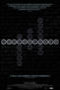 | Codebreaker | 2011 | EN | mp4 | 1080p | Henry Goodman, Ed Stoppard, Paul McGann, Asa Briggs, Jean Valentine, David Leavitt, Rolf Noskwith, Dermot Turing, Christopher Morcom, Ian Stewart, Martin Davis, Matt Parker, Steve Wozniak, Alma Whitten, Tony Sale, Simon Schaffer, Jeffrey Weeks, Allan Pacey, Maria Summerscale, Barbara Maher, Andrea Sella, Samuel West | |
 |
Coming Clean | 2020 | EN | mp4 | 1080p | Maurício Barcellos, Lucas Canavarro, Ivan Bueno, Bruno Marcolongo, Igor Mo, Maurício José Barcellos, Carlito Tirira Meshi, Gilda Nomacce | |
| Coming Of Age Vol 1 | 2009 | EN | mp4 | 480p | Ben Whishaw, Raoul O'Connell, Kevin McClatchy, Ann Russo, Arthur Moncla, Rémi Bresson, Élodie Bollée, Jonathan Reyes | ||
| Coming of Age Vol 2 | 2009 | EN | mp4 | 576p | Ben Hogestyn, Bo Gorman, Jay Michael Ferguson, Eddie Ebell, Nicholas Downs, Joe Domenico, Michael Simon, Joseph Paneno | ||
| Coming of Age Vol 3 | 2012 | EN | mp4 | SD | Dustin Varpness, Michael Kirby, Daniel Marin, Manny Montana, Damien Midkiff, Ryan Honey, Sam Borenzweig, Joseph Castanon | ||
| Coming of Age Vol 4 | 2011 | EN | mp4 | SD | Florent Arnoult, Matila Malliarakis, Rory Kozoll, Vartan Latyre, Jon Powell, Andreas Wigand, Christy Geslain, Cameron Northey | ||
| Coming Out Under Fire | 1994 | EN | mp4 | 480p | Arthur Dong | ||
 |
Confessions [Bonus Shorts] | 2016 | EN | mp4 | 480p | David Alanson Bradberry, Brendan Patrick, Mark Cirillo, Andrew Clements, Vincent Cusimano, Jay Ellis, Zack Gillette, Tom Goss, Joseph Graham, Nick Scott Guyer, Scott Ibarra, Dana Kjeldsen, Lotti Pharriss Knowles, Benjamin Lutz, Shawn Phillips, Dylan Vox, Peter Stickles, Leigh Wakeford, Stephen Twardokus | |
| Confessions | 2016 | EN | mp4 | 576p | David Alanson Bradberry, Brendan Patrick, Mark Cirillo, Andrew Clements, Vincent Cusimano, Zack Gillette, Tom Goss, Joseph Graham, Nick Scott Guyer, Scott Ibarra, Dana Kjeldsen, Lotti Pharriss Knowles, Benjamin Lutz, Shawn Phillips, Dylan Vox, Peter Stickles, Leigh Wakeford, Stephen Twardokus, Ari Sylvio | ||
| Conspiracy of Silence | 2003 | TL | mp4 | SD | Jonathan Forbes, Hugh Bonneville, Brenda Fricker, Sean McGinley, Jason Barry, Hugh Quarshie, John Lynch, Niall O'Brien, Elaine Symons, Tommy Carey, Paudge Behan, Olivia Caffrey, Anna Rose Fullen, Jim Norton, Harry Towb, Pádraig Lynch, Fintan McKeown, Christopher Dunne, Owen McDonnell, Aidan O'Hare, Edward MacLiam, Ciaran Murtagh, Chris O'Dowd, James Ellis, Lillian Patton, Catherine Walker, Sinead Keenan, Sean Boru, Gay Byrne, Taylor McAuley, Justine Mitchell, Brendan McNamara, Nuala Walsh, Patrick Duggan | ||
| Contracorriente | 2009 | ES | mp4 | 1080p | Cristian Mercado, Manolo Cardona, Tatiana Astengo, José Chacaltana, Attilia Boschetti, María Edelmira Palomino, Julio Humberto Cavero, Haydeé Caceres, Emilram Cossío, Cindy Díaz, Juan Pablo Olivos, Mónica Rossi, Germán González, Liliana Alegr´a, Christian Fernández | ||
| El corral | 2017 | ES | mp4 | 1080p | Patricio Penna, Felipe Ramusio Mora, Camila Rabinovich, Valeria Lois, Diego De Paula, José Mehrez | ||
| Un Couteau dans le cœur | 2019 | FR | mp4 | 1080p | Vanessa Paradis, Kate Moran, Félix Maritaud, Nicolas Maury, Pierre Emö, Pierre Pirol, Romane Bohringer, Thomas Ducasse, Jonathan Genet, Florence Giorgetti, Jacques Nolot, Els Deceukelier, Yann Collette, Bertrand Mandico, Noé Hernández, Thibault Servière, Khaled Alouach, Bastien Waultier, Simon Thiébaut, Dourane Fall, Ndoho Ange, Agnès Berthon, Elina Löwensohn, Jules Ritmanic, Renan Prévot, Teymour El Attar, Bertrand de Roffignac, Naelle Dariya, Rémi Lauby, Julie Brémond, Ingrid Bourgoin, Jérémy Benkemoun, Tanguy Roger, Thomas Bouyou, Gilles Carré, Christophe Bier, Pierre-Vincent Chapus, Olivier Mulin, Prince Zefy, Valérie Lesage, Lionel Abenaqui, Lisa Signorini, Nicolas Dax, Jérémy Flaum, Roméo Husquin, Mathis Porcel, Igor Dewe | ||
| Cruising | 1980 | EN | mp4 | 720p | Al Pacino, Karen Allen, Paul Sorvino, Richard Cox, Don Scardino, Joe Spinell, Jay Acovone, Randy Jurgensen, Barton Heyman, Kirsten Baker, Ed O'Neill, James Remar, Mike Starr, Powers Boothe | ||
| Cuatro Lunas | 2014 | ES | mp4 | 1080p | Antonio Velázquez, Alejandro de la Madrid, Cesar Ramos, Gustavo Egelhaaf, Alonso Echánove, Alejandro Belmonte, Marta Aura, Hugo Catalán, Jorge Luis Moreno, Karina Gidi, Juan Manuel Bernal, Gabriel Santoyo, Mónica Dionne, Diego Alfonso, Sebastián Rivera | ||
| The Curiosity of Chance | 2006 | EN | mp4 | 1080p | Tad Hilgenbrink, Brett Chukerman, Chris Mulkey, Aldevina Da Silva, Pieter Van Nieuwenhuyze, Maxim Maes, Danny Calander, Colleen Cameron, Magali Uytterhaegen | ||
| Daddy and the Muscle Academy | 1991 | EN | mp4 | 1080p | Touko Laaksonen, Nayland Blake, Durk Dehner, Isaac Julien, Bob Mizer | ||
| Dahmer | 2002 | EN | mp4 | 480p | Jeremy Renner, Bruce Davison, Artel Great, Matt Newton, Dion Basco, Kate Williamson, Christina Payano, Tom'ya Bowden, Sean Blakemore, Mickey Swenson, Julius Branca, Pierson Blaetz, Vincent Zangari, Xavier Lawrence, David Manis, Lily Knight, Steve Keyes, Daniel McInerney, Archie Howard, Damian Forester, Christopher Louis, Beau Clark | ||
| Dallas Buyers Club | 2013 | EN | mp4 | 1080p | Matthew McConaughey, Jennifer Garner, Jared Leto, Denis O'Hare, Steve Zahn, Michael O'Neill, Dallas Roberts, Griffin Dunne, Kevin Rankin, Donna DuPlantier, Deneen Tyler, J.D. Evermore, Ian Casselberry, Jane McNeill, Juliet Reeves, Douglas M. Griffin | ||
| Dancing on the Dark Side of the MooN | 2021 | EN | mp4 | 720p | Riley Ferris, Kory Anders, Daniel Jensen, Grayson Lange, Tristan Adler, Addison Graham, Taylor Caldwell, Luke Allen, Darren Capozzi, Robby Valls, Rashell Saucier, Alex Boecker, Robert Dunn, Nick Harrison, Elliot Sheen, Dallas Springs, Blaze Urban | ||
| Daniel Isn't Real | 2019 | EN | mp4 | 1080p | Miles Robbins, Patrick Schwarzenegger, Sasha Lane, Hannah Marks, Mary Stuart Masterson, Chase Sui Wonders, Katie Chang, Chukwudi Iwuji, Jamar Greene, Cara Ronzetti, Michael Cuomo, Andrew Bridges, Madeleine Mfuru, Nathan Chandler Reid, Daniel Marconi, Rosanne Ma, Lynn Marocola | ||
| The Dark Place | 2014 | EN | mp4 | 1080p | Blaise Godbe Lipman, Timo Descamps, Brent Corrigan, Eduardo Rioseco, Travis Richey, Shade Streeter, Genevieve Buechner, Allison Lane, Shannon Day, Andy Copeland, Joshua Stenseth, Denny McAuliffe, Kendall Wells, Harold Phillips, Ron Boyd, Jessica Hendrickson, Butch Stevenson, Darrell Salk, Brady James, Tellier Killaby, Christopher Toyne, D.C. Donovan Lehosky, Geno Romo, Andrew Wakefield, Jacob Block, Erin Hagen, Emily McWilliams, Jennifer Oswald | ||
| Darker Secrets: Sideline Secrets II | 2008 | EN | mp4 | 480p | David Beutler, Rick Bolander, Riley Sheridan, Ryan Bauer, Danika Christie, Ryan Lynn, Tim Garrett, Lock Lee, Matthew Strom, C.K. Moseley, Kyler Achun, Chase Fleming, David Wright, Dave Padilla, Dan Swett, Laura Reilly | ||
| Darkroom: Tödliche Tropfen | 2019 | DE | mp4 | 720p | Bozidar Kocevski, Heiner Bomhard, Katy Karrenbauer, Bardo Böhlefeld, Julia Blankenburg, Oliver Sechting, Janina Elkin, Christiane Ziehl, Lucas Rennebach, Christian Dieterle, Ulf Peter Schmitt, Sohel Altan Gol, Bastian von Bömches, Malte Kalweit, Pierre Emö, Hendrik Heutmann, Thomas Linz, Rosa von Praunheim, Paolo Laganà | ||
| David Is Homosexual | 1976 | EN | mp4 | 720p | David Parent, Debbie Parent, Ghishlain Parent, Ray McLaughlain | ||
| Deadly Screams of a Naked Siren | 2019 | EN | mp4 | 720p | Tristan Adler, Kory Anders, Jason Caceres, Orion Cross, Riley Sheridan, James Townsend, David Beutler, Todd Tetreault, Laura Reilly | ||
| Dear Mr. Gacy | 2010 | EN | mp4 | 1080p | William Forsythe, Jesse Moss, Emma Lahana, Cole Heppell, Belinda Metz, Michael Ryan, Eric Keenleyside, Daryl Shuttleworth, Patrick Gilmore, Andrew Airlie, Michael Kopsa, Jeffrey Bowyer-Chapman, Hunter Elliott, Michaela Mann, Dee Jay Jackson, Libby Osler, Brett Dier, James Fredrick Ralph, Jaren Brandt Bartlett, Lynn Colliar, Richard Harmon, Andrea Brooks, Anthony Shim, Karissa Tynes, Josh Goring, Kai Kennedy, John Andrew Vaas | ||
| Death Drop Gorgeous | 2021 | EN | mp4 | 720p | Wayne Gonsalves, Payton St. James, Brandon Perras-Sanchez, Christopher Dalpe, Michael J. Ahern, Sean Murphy, Matthew Pidge, Complete Destruction, Ninny Nothin, Linnea Quigley, Neokti Feytal, Kelly Square, Jacqueline Dimera, Tradd Sanderson, Mike Murphy, Michael Puppi, Ryan Miller, Morgan Galen King | ||
| Deathwatch | 1966 | EN | mp4 | 480p | Michael Forest, Paul Mazursky, Leonard Nimoy, Robert Ellenstein, Gavin MacLeod, Susan Breckir, Fletcher Fist, Ed Johnson, Robert Pickering, Andre Tayir | ||
| Dedalus | 2018 | EN | mp4 | 720p | Alexander Horner, Thomas Jay Ryan, Ashley Robicheaux, Shannon Sullivan, Jefferson White, Rachel Povse | ||
| Deleted Scenes | 2010 | EN | mp4 | 480p | Ivica Kovacevic, Michael Vaccaro, Todd Verow, Josh Ubaldi | ||
| Denied | 2004 | EN | mp4 | SD | Lee Rumohr, Matt Austin, Sarah Kanter, Matthew Finlason, Nathalie Toriel, Christina Sicoli, Anne Tager Page, Stefan Brogren | ||
| Desire: The Short Films Of Ohm | 2019 | EN | mp4 | 720p | A.J. Andersen, Nic Caruccio, Alicia Hilton, Beck Nolan, Joseph Williams, James Spangler, Ohm Phanphiroj, Richard Boyd, Frank Cashio | ||
| Devil's Path | 2018 | EN | mp4 | 720p | Stephen Twardokus, JD Scalzo, Jon Gale, Michael Hampton, Steve Callahan, Spencer Kelly, Michael van Why, Brandy Elliott | ||
| The Devil's Playground | 1976 | EN | mp4 | 720p | Arthur Dignam, Nick Tate, Simon Burke, Charles McCallum, John Frawley, John Diedrich, Alan Cinis, Richard Morgan, Rowan Currie, Gary Pixton, Michael David, Warren Coleman, Marc Gough, Andrew Court, Brett Murphy, Wayne Comley, Peter Cox, Jonathan Hardy, Gerry Duggan, Thomas Keneally, Sheila Florance, Gary Shaw | ||
| Dick: The Documentary | 2013 | EN | mp4 | 720p | Brian Fender | ||
| Discreet | 2017 | EN | mp4 | 576p | Jonny Mars, Atsuko Okatsuka, Joy Cunningham, Jordan Elsass, João Federici | ||
| Disorienting Dick | 2022 | EN | mp4 | 720p | Graham Stokes, Victoria Paradis, Sarah Reed, Terry Shea, Leslie Racine Vazquez, Albert Lin, Jaybird Walker, Alec Farquharson, Megan Begin, Robert Kersey, Amy Thompson | ||
| Do Começo ao Fim | 2009 | EN | mp4 | SD | João Gabriel Vasconcellos, Rafael Cardoso, Júlia Lemmertz, Fábio Assunção, Jean Pierre Noher, Gabriel Kaufmann, Lucas Cotrim, Louise Cardoso | ||
| Do You Take This Man | 2017 | EN | mp4 | 720p | Jonathan Bennett, Anthony Rapp, Alyson Hannigan, Alona Tal, Mackenzie Astin, Thomas Dekker, Hutchi Hancock, Sam Anderson, Lee Garlington, Marla Sokoloff, Adam Huber | ||
| Dog Tags | 2008 | EN | mp4 | SD | Paul Preiss, Hoyt Richards, Candy Clark, Keythe Farley, Diane Davisson, Bart Fletcher, Barry J. Ratcliffe, Chris Carlisle, Bobby Zelsdorf, Amy Lindsay | ||
| 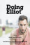 | Doing Elliot | 2016 | EN | mp4 | 720p | Tristan, Cyrill | |
| Don't Love Me | 2017 | EN | mp4 | 1080p | Alex Kelly, Alexander Scott | ||
 |
Donne-moi la main | 2008 | EN | mp4 | SD | Victor Carril, Alexandre Carril, Anaïs Demoustier, Samir Harrag, Patrick Hauthier, Katrin Sass, Fernando Ramallo, Maya Borker, Michel Grateau, Oswaldo Parma, Elsa Malterre, Elodie Meurlargé, Jean-Pascal Abribat, Franck Guilbot, Joël Pyrene, Jeanine Roy, Corinne Pougnaud | |
| Drawn Back Home | 2020 | EN | mp4 | 720p | Mickey O'Sullivan, Paul Michael Thomson, Clare Cooney, Paula Anglin, Stan Adams, Jennifer Jelsema, James Pomeroy, Michèle Garcia, Jacks Von Liria | ||
| Drawn This Way | 2019 | EN | mp4 | 1080p | Andrew Cheng, Cara Connors | ||
| Dream Boat | 2017 | EN | mp4 | 720p | Tristan Ferland Milewski | ||
| 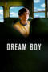 | Dream Boy | 2008 | EN | mp4 | 576p | Stephan Bender, Thomas Jay Ryan, Diana Scarwid, Tom Gilroy, Maximillian Roeg, Rooney Mara, Randy Wayne, Owen Beckman, Rickie Lee Jones, Nick Ericson | |
| Dream On | 2013 | EN | mp4 | 480p | Bradley Cross, Joe Gosling, Janet Bamford, Emily Spowage, Matthew Seber | ||
| Drink Me | 2015 | EN | mp4 | 576p | Chris Ellis-Stanton, Emmett Friel, Darren Munn | ||
| East Side Story | 2006 | EN | mp4 | 576p | Luis Accinelli, René Alvarado, David Berón, Steve Callahan, Michael Cassady, Dominic Ceci, Irene DeBari, Yelyna De Leon, Carl Donelson, Anthony Fitzgerald, Gladys Jimenez, Shannon Kemp, Cory Schneider, Andrea Zafra, Ruben Rabasa, Luis Raúl | ||
| Eastern Boys | 2013 | EN | mp4 | 1080p | Olivier Rabourdin, Kirill Emelyanov, Daniil Vorobyov, Edéa Darcque, Camila Chanirova, Bislan Yakhiaev, Mohamed Doukouzov, Aitor Bourgade | ||
| Eating Out | 2004 | EN | mp4 | 480p | Rebekah Kochan, Ryan Carnes, Scott Lunsford, Jim Verraros, Kris Black, Billy Shepard, John Janezic | ||
| Eating Out 2: Sloppy Seconds | 2006 | EN | mp4 | 1080p | Brett Chukerman, Rebekah Kochan, Jim Verraros, Emily Brooke Hands, Scott Vickaryous, Mink Stole, Adrian Quinonez, Marco Dapper | ||
| Eating Out: All You Can Eat | 2009 | EN | mp4 | 1080p | Rebekah Kochan, Daniel Skelton, Chris Salvatore, Michael E.R. Walker, Julia Cho, Mink Stole, Leslie Jordan | ||
| Eating Out: Drama Camp | 2011 | EN | mp4 | 1080p | Chris Salvatore, Daniel Skelton, Aaron Milo, Ronnie Kroell, Harmony Santana, Lilach Mendelovich, Steven Daigle, Rob Westin, Drew Droege, Cleo Anderson, Jesse Archer, Michael Serrato, Rebekah Kochan, Mink Stole | ||
| Eating Out: The Open Weekend | 2012 | EN | mp4 | 1080p | Chris Salvatore, Daniel Skelton, Aaron Milo, Lilach Mendelovich, Harmony Santana, Michael Vara, Alvaro Orlando, Nicol Paone, Chris Puckett, Michael King, Michael Clifford | ||
| Echte Kerle | 1996 | EN | mp4 | SD | Christoph M. Ohrt, Carin C. Tietze, Tim Bergmann, Oliver Stokowski, Rudolf Kowalski, Andreas Pietschmann, Dieter Brandecker, Daniela Ziegler | ||
| Edge of Seventeen | 1998 | EN | mp4 | 1080p | Chris Stafford, Tina Holmes, Andersen Gabrych, John Eby, Stephanie McVay, Lea DeLaria, Antonio Carriero, Jason Lockhart, Tony Maietta, Jeff Fryer, Kevin Joseph Kelly, Mark Gates, Stevie Reese Desmond, Barbie Marie, Craig H. Shepherd, Doug Million, Clay Van Sickle, Jimmy Mack, Justin Leach, Jeffrey Abramson, Don Mitri, Mike Roth, Adam Penton, Tal Ben-David, Dina Ansden, Karen Brooks, Shannon Constantine, Edd Martin, Gregg Long, Ryan Florio, Twiggy, Frank Klingshin, Dominic Carrion, Khalid Abdelrasoul, Sally Law, Jarred J. Nichols, Jay Warshak, Diva Delaria-Foley, Jason Griffith | ||
| Edward Carson and the Fall of Oscar Wilde converted | 2021 | EN | mp4 | SD | Merlin Holland, Gyles Brandreth, Simon Callow, Rupert Everett | ||
| Edward II | 1991 | EN | mp4 | 1080p | Steven Waddington, Andrew Tiernan, Tilda Swinton, Nigel Terry, John Lynch, Dudley Sutton, Jerome Flynn, Jody Graber, Annie Lennox, Kevin Collins, Tony Forsyth, Jill Balcon, Barbara New, Andrea Miller, Brian Mitchell, David Glover, Andrew Charleson, John Quentin, Roger Hammond, Allan Corduner, Lloyd Newson, Nigel Charnock, Mark Davis, Andy Jeffrey, Barry John Clarke, John Henry Duncan, Thomas Duncan, Giles de Montigny, Jonathan Stables, Michael Watkins, Robb Dennis, Chris McHallem, David Oliver, Christopher Adamson, Danny Earl, Kim Dare, Kristina Overton, Trevor Skingle, Christopher Hobbs, Sandy Powell, Kate Temple, Andrew Lee Bolton, Liz Ranken, Renee Eyre, Sharon Munro, Daniel Bevan, Ian Francis, Tristam Cones, Jocelyn Pook, Abigail Brown, Sonia Slaney, Dinah Beamish | ||
| Eighteen | 2005 | EN | mp4 | SD | Paul Anthony, Carly Pope, Brendan Fletcher, Alan Cumming, Ian McKellen, Thea Gill, Mark Hildreth | ||
| Eloi and Biel | 2013 | EN | mp4 | 720p | Eloi, Biel | ||
| The End | 2017 | EN | mp4 | 720p | Pierre Emö, Bishop Black, Manuel Voss | ||
| El cielo dividido | 2006 | ES | mp4 | SD | Miguel Ángel Hoppe, Fernando Arroyo, Alejandro Rojo, Ignacio Pereda, Klaudia Aragon, Clarisa Rendón, Pilar Ruiz | ||
| The End of Cruising | 2013 | EN | mp4 | 480p | Philly Abe, Mike Dreyden, Dave Hickey, Antony Hickling, James Kleinmann, Ashley Ryder, Matt Sizemore, Xavier Stentz, Michael Vaccaro, Todd Verow, David J. White | ||
| The Endless Possibility of Sky | 2012 | EN | mp4 | 480p | Theodore Bouloukos, Brad Hallowell, Jon Moritsugu, Gary Kramer | ||
| Enemies with Benefits | 2016 | EN | mp4 | 480p | Chance Feandro, Edward Gutierrez, Desi Santana, Steven Bright, Marshall Thomas, Grayson Lange, Addison Graham, Jeremiah Hein | ||
| An Englishman in New York | 2009 | EN | mp4 | 480p | John Hurt, Denis O'Hare, Jonathan Tucker, Cynthia Nixon, Swoosie Kurtz | ||
| Entropic | 2019 | EN | mp4 | 720p | Khalid Klein, Stephen Huszar, Christopher Jacot, Sabryn Rock, Christine Horne, Tommy James Murphy, Eldon Thiele, Carlos Gonzalez-Vio, Taylor Olson, Ariana Marquis | ||
| Équation à un inconnu | 1980 | ES | mp4 | 1080p | Jean-Jacques Loupmon, Reinhard Montz, Gianfranco Longhi, Eric Guardagnan, Norbert Terry | ||
 |
Eroddity(S) | 2014 | EN | mp4 | 480p | Brandon Rife, Addison Graham, Edward Gutierrez, Cory Tyndall, Alderic Vitale, Aleksandr Dissan, Heather Paige Cohn, Tony Roehl, Joshua Naranjo, Ryan Massey, Federico Pedroni, Riley Ferris, Julie Kessel, Zach Nelson, Holgie Forrester | |
| ErOddity(s) 2 | 2015 | EN | mp4 | 576p | Addison Graham, Grayson Lange, Cory Tyndall, Clay Yearwood, Walter Delmar, Edward Gutierrez, Riley Ferris, Ish Bermudez, Shawn Andrews, Quinn Jaxon, Desi Santana, Elizabeth Jean, Brandon John, Robby Valls, Taylor Reign | ||
| Errante corazón | 2021 | EN | mp4 | 720p | Leonardo Sbaraglia, Miranda de la Serna, Eva Llorach, Iván González, Alberto Ajaka, Thalita Carauta, Tuca Andrada, Beatriz Rajland | ||
| Escaping Freedom | 2020 | EN | mp4 | 720p | Patrick D. Green, Kelly Godell, Jonathan Daniel Miles, Brian Adrian Koch, Laura Welsh, Jill Sughrue, Casey Pfeifer, Jeffrey Arrington, Devon Rawlings, Georgie Linscott, Adam Dunlap, Jason Reynolds, Greg James, Jonathan Wexler, George Faux, Kyle Stoltz, Byron K. Beck, Randy Draper, Justin Robert Warner | ||
| Été 85 | 2020 | FR | mp4 | 1080p | Félix Lefebvre, Benjamin Voisin, Philippine Velge, Valeria Bruni‑Tedeschi, Melvil Poupaud, Isabelle Nanty, Laurent Fernandez, Aurore Broutin, Bruno Lochet, Yoann Zimmer, Antoine Simon, Patrick Zimmermann, Samuel Brafman-Moutier, Benjamin Allouche | ||
| Eulogy for a Vampire | 2009 | EN | mp4 | 480p | Patrick McGuinn | ||
| Everything Is Free | 2017 | EN | mp4 | 1080p | Brian Jordan Alvarez, Morgan Krantz, Peter Vack, Jason Greene, Judilin Bosita, Stephanie Koenig, Danièle Watts, Bruce Bundy, Jimmy Fowlie, Kurt Zaehnsdorf, Ken Kirby, Jonathan Ebeling | ||
| The Falls | 2012 | EN | mp4 | 1080p | Nick Ferrucci, Benjamin Farmer, Brian Allard, Harold Phillips, Quinn Allan, Justin Koleszar | ||
| The Falls: Covenant of Grace | 2016 | EN | mp4 | 1080p | Nick Ferrucci, Benjamin Farmer, Curtis Edward Jackson, Bruce Jennings, Harold Phillips, Rebecca Karpovsky | ||
| The Falls: Testament Of Love | 2013 | EN | mp4 | 720p | Brian Allard, Hannah Barefoot, Bryan Bernart, Andrew Bray, Aaron Brian, Megan Carver, Michael Draper, Trish Egan, Benjamin Farmer, Nick Ferrucci | ||
| El Fantasma De La Sauna | 2021 | ES | mp4 | 720p | Nestor Goenaga, Martín Spínola, Pablo Liñares, Pupi Poisson, Antonia San Juan, Supremme de Luxe, Tavi Gallart, Javier Hernández, Fernando Albizu, Goizalde Núñez, Ginés Garez, Andrés Cheung | ||
| Father Knows... | 2007 | EN | mp4 | 480p | Luke Aulwurm, Cort Donovan, Efrain Gonzalez Jr., Carl Goodkin, Jon Brockelman, Todd Bryant, Brad Burns, Pardon Cezar, James Fazzini, Larry Filas, Miss Foozie, Joe Rubin | ||
| Feed Them to the Cannibals! | 1993 | EN | mp4 | 480p | Suzanne Bertish, Fred Nile, Leo Schofield, Dawn O'Donnell, Kimberley O'Sullivan, Lance Gowland, David McDiarmid, Peter Tully, Cath Phillips, Kerry Beggs, Adrian Gough, Jasper Laybutt, Lana Turnip, Richard Cobden, Gillian Minervini, Nora Savona, Danny Vedasz, Gay Hawkins, Clover Moore | ||
| Fin de siglo | 2019 | ES | mp4 | 1080p | Juan Barberini, Ramón Pujol, Mía Maestro, Mariano López Seoane, Helen Celia Castro-Wood | ||
| Fire Island | 2022 | EN | mp4 | 1080p | Bowen Yang, Joel Kim Booster, Margaret Cho, Conrad Ricamora, James Scully, Matt Rogers, Torian Miller, Zane Phillips, Michael Graceffa, Nick Adams, Aidan Wharton, Peter Smith, Bradley Gibson, Tomás de Mattos | ||
| Firebird | 2021 | EN | mp4 | 720p | Tom Prior, Oleg Zagorodnii, Diana Pozharskaya, Nicholas Woodeson | ||
| FIT | 2010 | EN | mp4 | 1080p | Duncan MacInnes, Ludvig Bonin, Sasha Frost, Lydia Toumazou, Stephen Hoo, Jay Brown, Katie Borland, Jo Castleton | ||
| Flatbush Luck | 2016 | EN | mp4 | 720p | Tanner Novlan, Robby Stahl, Briana Marin, Michael Nathanson, Natalie Britton, Juahn Cabrera, Miles Mussenden, Alex McKenna, Jenna Perez, Dollar Tan, Casper Andreas | ||
| Flesh for Frankenstein | 1973 | EN | mp4 | 720p | Joe Dallesandro, Monique van Vooren, Udo Kier, Arno Juerging, Dalila Di Lazzaro, Srdjan Zelenović, Nicoletta Elmi, Marco Liofredi, Liù Bosisio, Rosita Torosh, Fiorella Masselli, Cristina Gaioni | ||
| Flirting with Anthony | 2005 | EN | mp4 | 480p | Daniel Cartier, Lowe Cunningham, Ryan A. Allen, Linus, Andrew Sears, Mink Stole, Judy Tenuta, Brian Grillo | ||
| Fluidø | 2012 | EN | mp4 | 720p | Alexander Geist, Bishop Black, William E. Morris, Antonio Onio, Kristina Marlen, Aérea Negrot | ||
| Focus/Refocus | 2012 | EN | mp4 | 480p | Cole Streets, David Taylor, Steve Cruz, Bruno Bond, Ryan Raz, Joe Wicht | ||
| Forget Me Not | 2022 | EN | mp4 | 1080p | Javier des Léon, Abel Sanztin | ||
| A Four Letter Word | 2007 | EN | mp4, mp4 | 1080p, SD | Jesse Archer, Charlie David, Jeremy Gender, Cory W. Grant, Max Rhyser, Artem Shcherbakov, Aaron Star, Jonathan Baird | ||
| Freier Fall | 2013 | DE | mp4 | 720p | Hanno Koffler, Max Riemelt, Katharina Schüttler, Maren Kroymann, Luis Lamprecht, Attila Borlan, Oliver Bröcker, Horst Krebs, Shenja Lacher, Hassan Lazouane, Stephanie Schönfeld, Britta Hammelstein, Barbara Bernt, Samuel Schnepf, Vilmar Bieri, Jonathan Müller | ||
| Frisk | 1996 | EN | mp4 | SD | Michael Gunther, Craig Chester, Michael Stock, Raoul O'Connell, Jaie Laplante, Parker Posey, Alexis Arquette | ||
| The Fruit Machine | 1988 | EN | mp4 | 480p | Emile Charles, Louis Emerick, Bruce Payne, Robert Stephens, Clare Higgins, Robbie Coltrane, Carsten Norgaard, Kim Christie, Julie Graham, Paula Ann Bland, Niven Boyd, Caroline Milmoe | ||
| Furious Desires | 2017 | EN | mp4 | 720p | Ricky Mastro, Rodrigo Álvarez Flores | ||
| G.B.F. | 2013 | EN | mp4 | 720p | Michael J. Willett, Paul Iacono, Sasha Pieterse, Andrea Bowen, Molly Tarlov, Evanna Lynch, Xosha Roquemore, Joanna 'JoJo' Levesque, Megan Mullally, Natasha Lyonne, Rebecca Gayheart, Jonathan Silverman, Taylor Frey, Brock Harris | ||
| 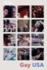 | Gay USA | 1977 | EN | mp4 | 720p | Stuart Loomis, Pat Parker | |
| Gefangen | 2004 | EN | mp4 | SD | Marcel Schlutt, Mike Sale, Ralf Steel | ||
| Get a Life | 2006 | EN | mp4 | 480p | Brian Cambell, Peter Marinelli, Matthew Edwards | ||
| Get Real | 1998 | EN | mp4 | 1080p | Ben Silverstone, Brad Gorton, Charlotte Brittain, Stacy Hart, Kate McEnery, Patrick Nielsen, Tim Harris, James D. White, James Perkins, Nicholas Hunter, Jacquetta May, David Lumsden, Morgan Jones, Steven Mason, Richard Hawley, Steven Elder, Andy Rashleigh, Ian Brimble, Judy Buxton | ||
| Getting Go: The Go Doc Project | 2013 | EN | mp4 | 1080p | Tanner Cohen, Matthew Camp, Ramón Olmos Torres, Judy McLane | ||
| Getting It | 2020 | EN | mp4 | 1080p | Tom Heard, Donato De Luca, Sharron Bower, Lesley Pedersen, Jason Graf, Adrian Laguette, Luke Hill, Rob Kaczmarek, Laura Galt, Lana Dieterich, Juliet Robb, Jane Schwartz, Christopher Lee Herod, Siegen Bretzke, Shanna Lea | ||
| Gewoon vrienden | 2018 | NL | mp4 | 1080p | Majd Mardo, Josha Stradowski, Jenny Arean, Tanja Jess, Sjoerd Dragtsma, Sonia Eijken, Melody Klaver, Nazmiye Oral | ||
| Giant Little Ones | 2019 | NL | mp4 | 1080p | Josh Wiggins, Darren Mann, Taylor Hickson, Maria Bello, Kyle MacLachlan, Olivia Scriven, Niamh Wilson, Hailey Kittle, Peter Outerbridge, Stephanie Moore, Kiana Madeira, Evan Marsh, Carson MacCormac, Jeff Clarke, Cory Lee | ||
| Gingers | 2013 | EN | mp4 | 720p | Adam, Andreas, Andrew, Anthony, Anton, Breno, Simon, Damien, Don, Mark, Mateus, Matthias, Otavio, Padraig, Richard, Rui, Sam, Sander, Sergio, Stephan, Tadeusz, Thomas, Xavier, Ze | ||
| Glitterbug | 1994 | EN | mp4 | 576p | William S. Burroughs, Derek Jarman, Tilda Swinton, Genesis P-Orridge, Michael Clark, Toyah Willcox, Adam Ant, Duggie Fields, Andrew Logan | ||
| God's Own Country | 2017 | EN | mp4 | 1080p | Josh O'Connor, Alec Secareanu, Ian Hart, Gemma Jones, Naveed Choudhry, Stefan Dermendjiev, Patsy Ferran, Moey Hassan, Melanie Kilburn, John McCrea, Harry Lister Smith, Alexander Suvandjiev, Liam Thomas, Sarah White | ||
| Godless | 2015 | EN | mp4 | 1080p | Craig Jordan, Michael E. Pitts, Garrett Young, Michelle Gallagher, Joseph Aloysius McGinn, Larry Stone, Jefferson Rogers, TJay Howard, Lovlee Carroll | ||
| Going Down in LA-LA Land | 2011 | EN | mp4 | 720p | Matthew Ludwinski, Michael Medico, Casper Andreas, Allison Lane, Jesse Archer, John Schile, Bruce Vilanch, Judy Tenuta, Alec Mapa, Brent Bailey, Scott DeFalco, Kurt Scholler, Todd Sherry, William Thomas Jones, Mark Cirillo, Angelina Hong, William Jackson , Leah Rachel, Sherry Weston, Linda Larson, Billy Snow, Paul Martignetti, Taaffe O'Connell, Erik Passoja, Daniel Hayes, Geoff Stirling Jr., Daniel Berilla, Gregg Jacobson, Spencer Falls, Ryan Driller, Claes Lilja, Tom Nobles, C. Stephen Browder, Perez Hilton, Brian Putnam, Mathew Lenski, Tatiana Turan | ||
| Goodbye Seventies | 2020 | EN | mp4 | 1080p | Chris Rehmann, Ken Kaissar, Justin Ivan Brown, James Kleinmann, Andrew Cawley, Marie Smalley, Julie Chapin, Jack Waters, Mike Dreyden, Todd Verow, Charles Lum | ||
| The Graffiti Artist | 2006 | EN | mp4 | SD | Ruben Bansie-Snellman, Pepper Fajans | ||
| Group Therapy | 2004 | EN | mp4 | 480p | Mitch Biggs, Harry Johnson, Luc Antony, Mike Angel, Colton Matthews, Thomas Peterson, Jack London, Andy Der Cheatbreath, Boo D. Licious, Joe Dain | ||
| Hairy | 2012 | EN | mp4 | 720p | Noel Alejandro | ||
| Handsome Devil | 2017 | EN | mp4 | 720p | Fionn O'Shea, Nicholas Galitzine, Andrew Scott, Michael McElhatton, Moe Dunford, Mark Doherty, Ruairi O'Connor, Ardal O'Hanlon, Hugh O'Conor, Amy Huberman, Norma Sheahan, Stephen Hogan, Lauterio Zamparelli, Eoin Griffin | ||
| The Happy Prince | 2018 | EN | mp4 | 720p | Rupert Everett, Colin Firth, Emily Watson, Colin Morgan, Edwin Thomas, Franca Abategiovanni, Alister Cameron, Anna Chancellor, Béatrice Dalle, Tom Colley, Johanna Kirby, André Penvern, Ronald Pickup, Matteo Salamone, Antonio Spagnuolo, John Standing, Benjamin Voisin, Tom Wilkinson, Julian Wadham, Caterina D'Andrea, Manu Asencio, Jean-Luc Bubert, Oliver Cater, Cyril Cordonnier, Thierry de Coster, Eleonora Costadura, Jacky Druaux, Laurent D'Elia, Raffaele Gargiulo, Patrick Hannaway, Aaron Henke, Hans-Jürgen Honikel, Jerry Joner, Alexis Julemont, Kit Loyd, Joshua McGuire, Vincenzo Messina, Philip Noel, Teodoro Petti, Arnaud Peiffer, Lo Polidoro, Gerard Rocher, Werner Rößler, Malo Scheen, Toby Sherborne, Philipp Spiegel, Yannick Thor, Christian Tye, Sarah Vandenabeele, Dylan Waters, Sam Barrett, Howard Perret, Sam Perry, Torren Simonsz | ||
| Hara Kiri | 2016 | EN | mp4 | 576p | Jesse Pimentel, Mojean Aria, Ruth Connell, Emilie Germain, Jamie Nocher, Natalie Camunas, Enoc Aguado | ||
| Harry + Max | 2004 | EN | mp4 | 480p | Bryce Johnson, Cole Williams, Rain Phoenix, Katherine Ellis, Roni Deitz, Tom Gilroy, Michelle Phillips, Justin Zachary, Max Piscioneri, Mark L. Young | ||
 |
Hate Crime | 2006 | EN | mp4 | 1080p | Seth Peterson, Bruce Davison, Chad Donella, Cindy Pickett, Brian J. Smith, Susan Blakely, Lin Shaye, Farah White, Giancarlo Esposito, Sean Hennigan, Brandy Little, Ben Bathman, Luke King, Earl Browning III, Scarlett McAlister | |
| Hating Peter Tatchell | 2021 | EN | mp4 | 1080p | Peter Tatchell, Ian McKellen, Stephen Fry, George Carey | ||
| His Highness Hollywood | 2008 | EN | mp4 | 480p | Janice Dickinson, Melanie Gideon, Ian Halperin, Ron Jeremy, Jay Leno, Belinda Montgomery, Bill Paxton, Sigourney Weaver, Catherine Zeta-Jones, Brad Pitt, George Clooney | ||
| HIV The Neglected Pandemic | 2021 | EN | mp4 | SD | Jonathan van Ness | ||
 |
Hoje Eu Quero Voltar Sozinho | 2014 | PT | mp4 | 1080p | Ghilherme Lobo, Fábio Audi, Tess Amorim, Lúcia Romano, Eucir de Souza, Selma Egrei, Isabela Guasco, Victor Filgueiras, Pedro Carvalho, Guga Auricchio, Bárbara Pereira, Matheus Abreu, Naruna Costa, Júlio Machado, Renata Novaes | |
| Holding The Man | 2015 | EN | mp4 | 720p | Ryan Corr, Craig Stott, Guy Pearce, Sarah Snook, Anthony LaPaglia, Geoffrey Rush, Camilla Ah Kin, Kerry Fox, Tom Hobbs | ||
| Hombre | 2017 | TL | mp4 | 720p | JM Martinez, Ace Toledo, Mico Madrid, Mark Roca, Jerom Umali, Carlo Mendoza, VJ Gomez, Jerson Bugarin | ||
| Homme au Bain | 2010 | FR | mp4 | SD | François Sagat, Chiara Mastroianni, Omar Ben Sellem, Rabah Zahi, Dennis Cooper, Kate Moran | ||
| Hooked | 2003 | EN | mp4 | 480p | Conor Donnally, Sean Ormond, Terrance Murphy, Jared Sandler, Katie McClellan, Jay Alan Christianson, Chaz Mena, Steve Hayes | ||
| Hooked | 2017 | EN | mp4 | 1080p | Conor Donnally, Sean Ormond, Terrance Murphy, Jared Sandler, Katie McClellan, Jay Alan Christianson, Chaz Mena, Steve Hayes | ||
| Hors les murs | 2012 | FR | mp4 | 480p | Guillaume Gouix, Matila Malliarakis, Mélissa Désormeaux-Poulin, David Salles, Marcos Adamantiadis, Adonis Danieletto | ||
 |
The House Of Adam | 2006 | EN | mp4 | SD | John Shaw, Jared Cadwell, Lexi Karriker, Thomas Michael Kappler, Tiffany McFarland, Reeve Howard, Joella Brown, Rex Davison, Ted Ryan, Scott Parietti, Jorge Ameer | |
| House of Boys | 2009 | EN | mp4 | 576p | Layke Anderson, Benn Northover, Udo Kier, Stephen Fry, Chris McHallem | ||
| House of Usher | 2008 | EN | mp4 | 480p | Michael Cardelle, Frank Mentier, Jaimyse Haft, Ian Shaw, Jack Carlisle, Bart Voitila, Dan Fugardi, Jill Jacobson, Gino Colbert | ||
| The Houseboy | 2007 | EN | mp4 | 720p | Nick May, Blake Young-Fountain, Damián Fuentes, Tom Merlino, Brian Patacca, Michael Apuzzo, David Beck, Trip Langley, Matthew Sandager, The World Famous *BoB* | ||
| Hustler White | 1996 | EN | mp4 | 720p | Tony Ward, Bruce LaBruce, Kevin P. Scott, Ivar Johnson, Kevin Kramer, Alex Austin, Ron Athey, Glen Meadmore, Graham David Smith, Miles H. Wildecock II | ||
| I Am Michael | 2015 | EN | mp4 | 720p | James Franco, Zachary Quinto, Emma Roberts, Daryl Hannah, Lesley Ann Warren, Avan Jogia, Charlie Carver, Devon Graye, Evie Thompson, Jenna Leigh Green, Leven Rambin, Ahna O'Reilly | ||
| I Am Syd Stone | 2020 | EN | mp4 | 720p | Travis Nelson, Benjamin Charles Watson, Daiva Johnston | ||
| I Racconti di Canterbury | 1972 | EN | mp4 | 1080p | Franco Citti, Ninetto Davoli, Josephine Chaplin, Dan Thomas, Hugh Griffith, Laura Betti, Alan Webb, Pier Paolo Pasolini, J.P. Van Dyne, Vernon Dobtcheff, Adrian Street, George Bethell Datch, Tom Baker | ||
| I Want Your Love | 2012 | EN | mp4 | 576p | Ben Jasper, Jesse Metzger, Brontez Purnell, Keith McDonald, Jorge Rodolfo, Ferrin Solano, Wayne Bumb, Shannon O'Malley, Courtney Trouble, Peter Knegt, Justin Time, Mike A. Ojeda, Ginno Castro, Ryan Crowder, Jon Ginoli, Eli Magid, Amos Mac | ||
| I'm A Porn Star | 2013 | EN | mp4 | 720p | Sean Paul Lockhart, Brent Everett, Rafael Alencar, Mark Bessenger, Laurie Betito, Duncan Black, Christian Andrews, Bobby Clark, Rod Daily, Colby Jansen, Chi Chi LaRue, Steve Pena, Johnny Rapid | ||
| I'm Not Gay | 2023 | EN | mp4 | 1080p | Sydney James Harcourt, Alan Mingo Jr., Manuel Herrera, Gracie Bryant, George Dvorsky, Jahi Kearse, Adrienne Walker, Brad Bradley, Nick Silverio, Yurel Echezarreta, Griffin Santopietro, Gene Gabriel, Ehizoje A., Michal Kolaczkowski, Jena Van Eslander | ||
| Ideal Home | 2018 | EN | mp4 | 1080p | Paul Rudd, Steve Coogan, Jack Gore, Alison Pill, Jake McDorman, Jesse Luken, Lora Martinez-Cunningham, Sarah Minnich, Stafford Douglas, Jacob Browne, Frances Lee McCain, Josey Smith, Kate Walsh, Jenny Gabrielle, Monique Candelaria, Alexandra Guarnaschelli, Courtney Cunningham, Drew Droege, Marie Wagenman, Cassandra Rochelle Fetters, Evan Bittencourt, Rodrigo Tactaquin, Mark Rowe, Eric Womack, Richard Beal, Jordyn Aurora Aquino, Clint Obenchain, J. Nathan Simmons, Alexander Daniel Pimentel, Kristin Berg, Emma Armstrong, Stephen Conn, Michael E. Stogner, Amanda Quintana-Bowles, Alison Grainger, Rick Tadra, Patrick V. Murphy, Ian Morris, Ronnie Gomez, Jeremiah Fresquez, Viola Valdez, Justin Lotz, Mason Howell, Sheila Eden, Sylvie Grontis Hagan, Amy Emily Stack | ||
| Il Decameron | 1971 | EN | mp4 | 720p | Franco Citti, Ninetto Davoli, Jovan Jovanović, Vincenzo Amato, Angela Luce, Giuseppe Zigaina, Maria Gabriella Maione, Vincenzo Cristo, Pier Paolo Pasolini, Giorgio Iovine, Salvatore Bilardo, Vincenzo Ferrigno, Guido Alberti, Vittorio Vittori, Gianni Rizzo, Patrizia De Clara, Monique van Vooren, Enzo Spitaleri, Luciano Telli | ||
| Il fiore delle mille e una notte | 1974 | IT | mp4 | 576p | Ninetto Davoli, Franco Citti, Ines Pellegrini, Tessa Bouché, Franco Merli, Alberto Argentino, Jocelyne Munchenbach, Margareth Clementi, Christian Aligny, Salvatore Sapienza, Jeanne Gauffin Mathieu, Francelise Noel | ||
| The Importance of Being Oscar | 2019 | EN | mp4 | 1080p | Richard Curson Smith | ||
| In From The Side | 2022 | EN | mp4 | 1080p | Alexander Lincoln, Christopher Sherwood, Pearse Egan, Alexander King, Peter McPherson, Ivan Comisso, Carl Loughlin, Kane Surry, Mary Lincoln, Alex Hammond, William Hearle, Diana Govina, Franck Assi, Nigel Fairs, Chris Garner, Robbie Main, Melissa Dalton, Tom Murphy | ||
| In the Blood | 2006 | EN | mp4 | 480p | Tyler Hanes, James Katharine Flynn, Robert Dionne, Carlos Alberto Valencia, Alison Fraser, Graeme Malcolm | ||
 |
In the Flesh | 1998 | EN | mp4 | 576p | Dane Ritter, Sandi Scheier, Ed Corbin, Shimley Reynolds, Randy Cohlmia, Philip Solomon, Roxzane T. Mims, Adrian Roberts, Lora Elkins, Julie R. Lee, Alison Jones, Elaine Tyson, Frank Roberts, Joseph Floccari, Brandon O'Dell, Adam Boyer | |
| L'inconnu du lac | 2013 | FR | mp4 | 720p | Pierre Deladonchamps, Christophe Paou, Patrick d'Assumçao, Jérôme Chappatte, Mathieu Vervisch, Gilbert Traina, Emmanuel Daumas, Sébastien Badachaoui, Gilles Guérin, François Labarthe | ||
| Interior. Leather Bar. | 2013 | EN | mp4 | 1080p | Val Lauren, Christian Patrick, Brenden Gregory, Bradley Roberge, Robbie Acklen, Osbaldo Daniel Alvarez, Andres Barcelo, Samantha Barrows, Nick Buda, Seana Carroll, Collin Chavez, Jol Devitro, Julie Diaz, James Franco, Brianna Getrost, A.J. Goodrich, Jonathan Howard, Caleb James, Anna Kooris, Michael Lannan, Eva Pepaj, Loc Le, Tatiana Leipet, Tyson C. Lenard, Travis Mathews, Matthew McKelligon, Joel Michaely, Chervine Namani, Adrian Pena, Ben Phen, Liz Phillips, Jake Robbins, Scott Schwenk, Jay Sosnicki, Lane Stewart, Iris Torres, Rob Vincent, Keith Wilson | ||
| Inxeba | 2017 | EN | mp4 | 720p | Nakhane Touré, Bongile Mantsai, Niza Jay Ncoyini, Thobani Mseleni, Gamelihle Bovana, Halalisani Bradley Cebekhulu, Inga Qwede, Sibabalwe Ngqayana, Siphosethu Ngcetane | ||
| Iron Boys 1: No Ordinary Joe | 2008 | EN | mp4 | 480p | Nathaniel Atcheson, Anthony Silverston, Harry Richards, Morgan R. Stiff, Jules Nurrish, Jaymes Thompson, Jörg Fockele, Kym Vaitiekus, Richard C. Hoblock | ||
| Iron Boys 2: The Last Secret | 2008 | EN | mp4 | 480p | Dustin Schell, Rie Natalenko, Alec Beckett, Stephen Williams, Ann Johnson | ||
| Iron Boys 3: Implicación | 2009 | EN | mp4 | 480p | Julián Quintanilla, Gianni Gatti, Vincent Gavara, Alex Mene, Luis Serra, Luis Ulloa, Lobo Pasolini, Simon Lanctôt, Michele Andian, Daniel Lamberts, Jojo Barker | ||
| Iron Boys 4: To Hold a Heart | 2007 | EN | mp4 | 480p | |||
| Is It Just Me? | 2010 | EN | mp4 | 720p | Nicholas Downs, David Loren, Adam Huss, Michelle Laurent, Bob Rumnock, Bruce Gray, Oskar Rodriguez | ||
| Issues 101 | 2002 | EN | mp4 | 480p | Michael Rozman, Dennis W. Rittenhouse Jr., Jeff Sublett, Jason Boegh, Yolanda Johnston, Jeremy Smith, Gary Castro Churchwell, Trevor Murphy, Kelly Clarkson, Brian Swinehart, Michael Haboush | ||
| It Is Not The Pornographer That Is Peverse | 2018 | EN | mp4 | 720p | Sean Ford, Calvin Banks, Allen King, Dato Foland, Levi Karter, François Sagat, AJ Alexander, Bishop Black, Valentin Braun | ||
| Jeffrey | 1996 | EN | mp4 | 1080p | Steven Weber, Patrick Stewart, Michael T. Weiss, Sigourney Weaver, Robert Klein, Nathan Lane, Christine Baranski, Bryan Batt, Victor Garber, Peter Maloney, Debra Monk, Olympia Dukakis, J. Smith-Cameron, Ethan Phillips, Kathy Najimy, Camryn Manheim, Alice Drummond, Peter Jacobson, David Thornton, Irma St. Paule, Jeff Ross, Joe Dain, K. Todd Freeman, Patrick Kerr, Peter Bartlett, John Seidman, Barton Heyman, Darryl Theirse, Lou Sumrall, Robert Capelli Jr., Vince Cupone, Nancy Ticotin, Gregory Jbara, Marylouise Burke, Sarah Peterson, Joe Ponazecki, Henry Stram, Kevin Nealon | ||
| Jesús | 2016 | ES | mp4 | 720p | Nicolás Durán, Alejandro Goic, Gastón Salgado, Sebastián Ayala, Esteban González, Constanza Moreno, Pablo Gutiérrez, Carlos Espinoza, Diego Cardona, Gloria Granja, Nick Bolt | ||
| Joe Bell | 2022 | EN | mp4 | 1080p | Mark Wahlberg, Reid Miller, Connie Britton, Maxwell Jenkins, Morgan Lily, Gary Sinise, Tara Buck, Ash Santos, Igby Rigney, Cindy Perez, Scout Smith, Coral Chambers, Blaine Maye, Blake Barlow, Charles Halford, Jayne Luke, Juan Antonio, Kenadee Clark, Cassie Beck, Jake Brown | ||
| Joe Orton Laid Bare | 2017 | EN | mp4 | 720p | Joe Orton, Bryan Dick, Jonathan Case, Leonie Orton, Michael Codron, Kenneth Cranham, Patrick Dromgoole, Christopher Hampton, John Lahr, Patricia Routledge, Dudley Sutton, Rosie Cavaliero, Freddie Fox, Arty Froushan, Ben Miles, Antony Sher, Jaime Winstone | ||
| Jonathan Agassi Saved My Life | 2019 | EN | mp4 | 1080p | Jonathan Agassi | ||
| Jongens | 2014 | NL | mp4 | 1080p | Gijs Blom, Ko Zandvliet, Jonas Smulders, Ton Kas, Stijn Taverne, Myron Wouts, Ferdi Stofmeel, Lotte Razoux Schultz, Rachelle Verdel, Julia Akkermans, Jeffrey Hamilton, Rifka Lodeizen, Micha Hulshof, Caroline Olde Rikkert, Roosmarijn van der Hoek | ||
| José | 2018 | ES | mp4 | 1080p | Enrique Salanic, Manolo Herrera, Ana Cecilia Mota, Jhakelyn Waleska Gonzalez Gonzalez, Esteban Lopez Ramirez, Cesar Lorenzo Yojcom Candido, Juan Andres Molina Cardona, Alba Irene Lemus, Carlos Humberto Fuentes Maldonado, Jennifer Cecilia Amoia Mota, Evelyn Celinda Bautista Torres, Jashua Belvino Argueta Mejia, Valeria Maribel Xutuc Reyes, Mytian Ticas, Rony Andres Saavedra, Tania Guevara | ||
| Jubilee | 1978 | EN | mp4 | 1080p | Jenny Runacre, Nell Campbell, Toyah Willcox, Jordan, Ian Charleson, Karl Johnson, Linda Spurrier, Jack Birkett, Hermine Demoriane, Neil Kennedy, Adam Ant, Richard O'Brien, David Brandon, Helen Wellington-Lloyd, Jayne County, Claire Davenport, Barney James, Donald Dunham, Gene October, Lindsay Kemp, Iris Fry, Joyce Windsor, Quinn Hawkins, Ulla Larson-Styles, Howard Malin, William Merrow, Luciana Martínez, Prudence Walters, Duggie Fields, Steven Severin, Siouxsie Sioux, Ari Up, Viv Albertine, Tessa Pollitt, Palmolive | ||
| Kaboom | 2010 | EN | mp4 | 1080p | Thomas Dekker, Haley Bennett, Chris Zylka, Roxane Mesquida, Juno Temple, James Duval, Andy Fischer-Price, Brandy Futch, Nicole LaLiberte, Kelly Lynch, Brennan Mejia, Carlo Mendez, Jason Olive, Christine Nguyen, Michael James Spall, Sean Bresnahan, Natalie Alyn Lind, Jen Mears | ||
| Keep the Lights On | 2012 | EN | mp4 | 576p | Thure Lindhardt, Zachary Booth, Julianne Nicholson, Souleymane Sy Savane, Paprika Steen | ||
| Kill Your Darlings | 2013 | EN | mp4 | 1080p | Daniel Radcliffe, Dane DeHaan, Elizabeth Olsen, Michael C. Hall, Ben Foster, Jack Huston, Jennifer Jason Leigh, Kyra Sedgwick, David Cross, David Rasche | ||
| The Killing of Sister George | 1968 | EN | mp4 | 720p | Beryl Reid, Susannah York, Coral Browne, Ronald Fraser, Patricia Medina, Hugh Paddick, Cyril Delevanti, Sivi Aberg | ||
| Killing Patient Zero | 2019 | EN | mp4 | 1080p | Gaétan Dugas | ||
| King Cobra | 2016 | EN | mp4 | 1080p | Garrett Clayton, Christian Slater, Molly Ringwald, Alicia Silverstone, Keegan Allen, James Franco, Spencer Lofranco, Sean Grandillo, Rosemary Howard, Edward Crawford, Ron Simons | ||
| Kiss of the Spider Woman | 1985 | EN | mp4 | 1080p | William Hurt, Raúl Juliá, Sonia Braga, José Lewgoy | ||
| Kissing Darkness | 2014 | EN | mp4 | 480p | Brent Corrigan, Ronnie Kroell, Nick Airus, Kyle Blitch, Sean Benedict, James Townsend, Griffin Marc, Roger Duplease, Daniel Berilla, Ish Bermudez, Kyan Loredo | ||
| The L-Shaped Room | 1962 | EN | mp4 | 1080p | Leslie Caron, Tom Bell, Brock Peters, Bernard Lee, Avis Bunnage, Patricia Phoenix, Cicely Courtneidge, Verity Edmett, Tony Booth, Harry Locke, Ellen Dryden, Emlyn Williams, Jennifer White, Gerry Duggan, Joan Ingram, Mark Eden, Stanley Morgan, Gerald Sim, Pamela Sholto, Ruth Burns, Diane Clare, Arthur White, Nanette Newman, Kay Walsh | ||
| L.A. Zombie | 2010 | EN | mp4 | 1080p | François Sagat, Rocco Giovanni, Wolf Hudson, Eddie Diaz, Andrew James, Matthew Rush, Erik Rhodes, Francesco D'Macho, Adam Killian, Tony Ward, Santino Rice, D.J. Sly | ||
| Last Ferry | 2019 | EN | mp4 | 720p | Myles Clohessy, Gabriel Sloyer, R. Ward Duffy, Byron Clohessy, Ramón Olmos Torres, Sheldon Best, Henry Ayres-Brown, Marc Sinoway, Larry Owens, Sam Given, Sheilagh Weymouth, Tyler Gardella, Ian McQuillan-Grace, Alton Alburo, Sam Leicht | ||
| The Last of England | 1987 | EN | mp4 | 720p | 'Spring' Mark Adley, Gay Gaynor, Matthew Hawkins, Spencer Leigh, Gerrard McArthur, Tilda Swinton, Nigel Terry, Jonathan Phillips | ||
| The Last Straight Man | 2015 | EN | mp4 | 1080p | Mark Cirillo, Scott Sell, David Alanson Bradberry, Benjamin Lutz, Roy Green, Brian Nolan, Marisa Serrano, Blake Harrison, Shane Fenske, Victoria De Mare | ||
| Last Summer | 2013 | EN | mp4 | 1080p | Samuel Pettit, Sean Rose, Roben R. Sullivant, Byron Taylor, Deb Lewis | ||
| The Latin Boys: Volume 1 | 2019 | EN | mp4 | SD | Rodrigo Bellott, Erick Salas Kirchhausen, Quentin Lazzarotto, Simon(è) Jaikiriuma Paetau, Andrés Madrigal Alvarado, Henrique Arruda | ||
| Latter Days | 2003 | EN | mp4 | 720p | Steve Sandvoss, Wes Ramsey, Jacqueline Bisset, Joseph Gordon-Levitt, Rebekah Johnson, Mary Kay Place, Erik Palladino, Amber Benson, Khary Payton, Rob McElhenney, Dave Power | ||
 |
Leave Blank | 2010 | EN | mp4 | SD | Gregg Tucker, Todd Verow | |
| Like a Moth to a Flame | 2009 | EN | mp4 | 480p | Anthony Blaze, Rachel Cable, Johnny Carvajal, Brian Chankin, Kostja Darvi, Ryan di Noor, Nick Eskow, Frank Failing, Daniel Fox, Ángel García, Brandi Harnish, Kl Kenzie, Andrew Mcardle, Blake Melvin, Rick Morrisey, Devlin Wilder, Joe Rubin | ||
| Like Cattle Towards Glow | 2016 | EN | mp4 | 480p | Christophe Honoré, Raphaël Bouvet, Nicolas Hau, Gabriel Norman, E.D. Yang, Joris Monnier, Pierre-Luc Baron-Moreau, Benedetta De Alessi, Valentin Puyau, Paul Hameline, Jimmy P., Elri, O.B. De Alessi, Luca Gabriel, Laurence Vialle, Gaël Depauw, Claude Pérès, Gisèle Vienne, Tim Rameau | ||
| Lilting | 2014 | EN | mp4 | 720p | Ben Whishaw, Cheng Pei-Pei, Andrew Leung, Morven Christie, Naomi Christie, Peter Bowles, Shane Salter, Leila Wong | ||
| Lions Love | 1969 | EN | mp4 | 1080p | Viva, James Rado, Gerome Ragni, Shirley Clarke, Carlos Clarens, Eddie Constantine, Max Laemmle, Hal Landers, Steve Kenis, Peter Bogdanovich, Billie Dixon, Richard Bright, Michael McClure, Jim Morrison, Peter Rafelson, Rip Torn, Agnès Varda, Andy Warhol, Rosalie Varda | ||
| Live for Sex... Die for Love | 2007 | EN | mp4 | 480p | Martin Aistrope, Ricky Sinz Joe Rubin, Ajax Satyros Mark Holland, Jeff Devins Thorne Brandt, Happy Dave | ||
| The Living End | 1992 | EN | mp4 | 1080p | Mike Dytri, Craig Gilmore, Darcy Marta, Mary Woronov, Mark Finch, Johanna Went, Paul Bartel, Scott Goetz, Brett Vail, Nicole Dillenberg, Stephen Holman, Magie Song | ||
| Lodi | 2018 | TL | mp4 | 480p | J.M. Martinez, Ace Toledo, Carlo Mendoza, Jonas Olmedo, Eagle Riggs, Mackie Raquiza | ||
| Lonesome | 2023 | EN | mp4 | 720p | Josh Lavery, Daniel Gabriel, Anni Finsterer, Ian Roberts, Ally Morgan, Vincent Andriano, Damien Killeen, Mark Paguio, Shane Emmett, Eddie O'Leary, Corey London, Mathew Waters, Hendrix Lee Taylor, Anthony Thomas, Shadi Sankary, Andrew Miatov, Joshua James, Gareth Ernst, J.D. Chard, Aileen Beale, Adam Marks, Burhan Z., Brodie Pyke, Liz Lin, Nathaniel Holdsworth, Adrian Jarrett, Shane Parsons, Liam Walker, Lewis Defina, Julian Oliver, Josh Phu, Valentino Noodle | ||
| 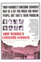 | Lonesome Cowboys | 1968 | EN | mp4 | 576p | Joe Dallesandro, Eric Emerson, Julian Burrough, Louis Waldon, Tom Hompertz, Viva, Allen Midgette, Frankie Francine, Taylor Mead | |
| Long-Term Relationship | 2006 | EN | mp4 | SD | Matthew Montgomery, Windham Beacham, Artie O'Daly, Chuti Tiu, Kelly Keaton, Jeremy Lucas, Jake Christian, Joel Bryant, Judy Farrell | ||
| Longhorns | 2011 | EN | mp4 | 1080p | Jacob Newton, Derek Efrain Villanueva, Dylan Vox, Kevin Held, Stephen Matzke, Bonnie Marion | ||
| Longtime Companion | 1989 | EN | mp4 | 1080p | Campbell Scott, Patrick Cassidy, Bruce Davison, Stephen Caffrey, Mary-Louise Parker, John Dossett, Dermot Mulroney, Michael Schoeffling, Brian Cousins, Dan Butler, Tony Shalhoub, Robert Joy, Welker White, Mark Lamos | ||
| Looking for Langston | 1989 | EN | mp4 | 480p | Ben Ellison, Matthew Baidoo, Akim Mogaji, John Wilson, Dencil Williams, Guy Burgess, Dublin James, Harry Donaldson, Jimmy Sommerville, Stuart Hall, Langston Hughes | ||
| Looking: The Movie | 2016 | EN | mp4 | 1080p | Jonathan Groff, Frankie J. Alvarez, Murray Bartlett, Lauren Weedman, Raúl Castillo, Daniel Franzese, Russell Tovey, Bashir Salahuddin, O.T. Fagbenle, Chris Perfetti, Tyne Daly, Michael Rosen, Derek Phillips, Jennifer Foster, Cleve Jones, Christopher Michael Holley, Suilma Rodriguez, AnnaCorey, Scott Free, Natalie Stephany Aguilar, Bobby Ysip | ||
| Lose Your Head | 2013 | EN | mp4 | 480p | Fernando Tielve, Marko Mandić, Sesede Terziyan, Stavros Yagoulis, Jonás Berami, Jan Amazigh Sid, Roger Baptist, Nico Döring, Andreas Stadler | ||
| The Lost Language of Cranes | 1992 | EN | mp4 | 480p | Brian Cox, Eileen Atkins, Angus Macfadyen, René Auberjonois, Corey Parker, Ben Daniels, Nigel Whitmey, Nicholas Le Prevost, Frank Middlemass | ||
| Love Or Whatever | 2012 | EN | mp4 | 720p | Tyler Poelle, Joel Rush, Jennifer Elise Cox, David Wilson Page, Jenica Bergere | ||
| The Love Patient | 2011 | EN | mp4 | 720p | Benjamin Lutz, John Werskey, Jackson Palmer, Madison Gray, Mike Pfaff, Laura Ulsh, John Kilpatrick, Andrew Miller, Hunter G. Williams, Annette Remter, Anabelle D. Munro, Marc Raymond, Denis O'Mahoney | ||
| Love, Simon | 2018 | EN | mp4 | 1080p | Nick Robinson, Josh Duhamel, Jennifer Garner, Katherine Langford, Alexandra Shipp, Jorge Lendeborg Jr., Keiynan Lonsdale, Miles Heizer, Logan Miller, Talitha Bateman, Tony Hale, Natasha Rothwell, Drew Starkey, Clark Moore, Joey Pollari, Mackenzie Lintz, Colton Haynes, Nancy De Mayo, David Copeland Brown Jr., Tyler Chase, Terayle Hill, Cassady McClincy, Haroon Khan, Alyssa Riley Burrell, Mandy Fason, Christian Ojore Mayfield, Alex Sgambati, Patrick Donohue, Joshua Mikel, Bryson Pitts, Nye Reynolds, Skye Mowbray, Samantha Bulka, Baz Ma, Natalia Tureta, Briana Estevez, Jönah-Blainé Bowling, Sean O'Donnell, Collin McHugh, Abigail Houck, Jodi Houck, Josh Royston, James Sterling, Tyson Love, Roy Coulter | ||
| A Lower Power | 2009 | EN | mp4 | SD | Mathew Lotto, William McMichael, Rafe Morgan Kossak, Adrian Anchondo, Donald Joseph, Adrian Emmanuel, Matthew Bridges, Tim Bland, Dave Amiott, Otto O'Connor, Nick Leonard | ||
 |
Lucky Bastard | 2009 | EN | mp4 | 576p | Patrick Tatten, Dale Dymkoski, Timothy Ryan Cole, Johnny Kostrey, Norma Louise, Nina Manni, Jane Fleiss, Ivar Brogger | |
| 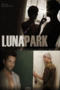 | Luna Park | 2013 | EN | mp4 | 480p | Laura Reilly, Brent Michael, Taylor Caldwell, Brandon Ryan Puleio, Alberto Rodriguez, Michael Adrian, Matthew Kalik, Richy Davis, Christian Hunter, Alex Janjanin, Clay Yearwood, Dylan Carden | |
 |
Luster | 2002 | EN | mp4 | SD | Justin Herwick, Shane Powers, B. Wyatt, Susannah Melvoin, Sean Thibodeau, Willie Garson, Pamela Gidley | |
| LUZ | 2020 | ES | mp4 | 720p | Ernesto Reyes, Jesse Tayeh, Jimmy Garcia, Alma Gloria Garcia, Lowell Deo, Rega Lupo, Marian Mendez, Evie Riojas | ||
| Macho Dancer | 1989 | EN | mp4 | 480p | Daniel Fernando, Allan Paule, Jaclyn Jose, William Lorenzo, Princess Punzalan, Lucita Soriano, Joel Lamangan, Timothy Diwa, Angelo Miguel, Johnny Vicar, Bobby Sano, Charlie Catalla, Anthony Taylor, Tony Mabesa, Ronald Mendoza, Mel Davidson, Paul Holmes, Jimmy Reyes, Mel Arca, Khryss Adalia, Marie Barbacui, Cheriebee Santos, Dan Bermudez, Rommel Santos, Bert Garon, Roscoe Martin, Ron Michaels, Elcid Esteban, Jun Medrano, Bonnie Mina, Eddie Mozon, Jason Aragon, Jose Cortez, Joel Saracho, Rene Soriano, Joseph Esquejo, Roland Maghinang, Frank Tinio, Raul Barbosa, Bunny Olaes, Joey Puno, Rollie Trinidad | ||
| Mailman | 2021 | EN | mp4 | 720p | Joseph Baken | ||
| Making It Big: The History of Gay Adult Film | 2020 | EN | mp4 | 720p | James Somerton | ||
| Making Love | 1982 | EN | mp4 | 1080p | Michael Ontkean, Harry Hamlin, Kate Jackson, Wendy Hiller, Arthur Hill, Nancy Olson, John Dukakis, Terry Kiser, Michael Dudikoff, Asher Brauner, John Calvin, Gwen Arner, Gary Swanson, Anne Haney, Stanley Kamel, Charles Lucia, David Knell | ||
| La mala educación | 2004 | EN | mp4 | 720p | Gael García Bernal, Fele Martínez, Daniel Giménez Cacho, Lluís Homar, Francisco Maestre, Francisco Boira, Nacho Pérez, Raúl García Forneiro, Javier Cámara, Alberto Ferreiro, Leonor Watling, Petra Martínez, Roberto Hoyas, Agustín Almodóvar, Pedro Almodóvar, Sara Montiel, Pau Poch, Juan Fernández, Sandra, Luis Martín Gil | ||
| The Male Gaze: Celluloid Dreams | 2021 | # | mp4 | 1080p | Greg Siff, Jonathon Natynczyk, Frédéric Deban, Kylan James, Petros Lagoutis, Lindsey Girardot | ||
| The Male Gaze: First Kiss | 2018 | # | mp4 | 1080p | Evan Todd, Grant Jordan, Boone Platt, Caroline Anglade, Satya Dusaugey, Jacob McCarthy, Tim May, Henric Gustavsson, Magdalena Sverlander | ||
| The Male Gaze: Hide and Seek | 2021 | # | mp4 | 720p | Zev Starrett, Daniele Mariani, Emanuel Caserio, Jakub Jablonský, Peter Martincek, Aaron Cini | ||
| The Male Gaze: Nocturnal Instincts | 2021 | # | mp4 | 720p | Tijmen Govaerts, Piotr Biedroń, Alexander Abdallah, Gabriel Omri Loukas, Aiden Nord | ||
| The Male Gaze: Shadows on Skin | 2023 | # | mp4 | 720p | Saladin Dellers, David Hugo Schmitz, Tanju Bilir, Peter Kotthaus, Júlio Oliveira, Lui Avallos, Santiago Leguizamo, Gabriel Miner, Vinicius Neri, Lucas Galvino, Antonio Miano | ||
| The Male Gaze: Strikers & Defenders | 2020 | # | mp4, mp4 | 1080p, SD | Harry Jarvis, Matthieu Lucci, Samuel Theis, Pierre Prieur, Simon Boutin, Makir Ahmed, Maxime Taffanel, George Somner, Connor Catchpole, Julian Mannebach, Andreas Klinger, Lennart Hillmann, Marius Rohmann, Leon Mamic | ||
| The Male Gaze: The Boy Is Mine | 2020 | EN | mp4 | 1080p | Roman Kané, Julien Drion, Roly Botha, Ryan Davies, Hannes Fohlin, Karl-Henrik Franzén, Carlos Flores Jr., Virginia Blanco, Roy Manzanares | ||
| The Male Gaze: The Heat of the Night | 2019 | # | mp4 | 720p | Ezra Fieremans, Andreas La Chenardière, Thomas Ryckewaert, Steven van Watermeulen, Michaël Assié, Enrique Gimeno Pedrós, Adams Mensah, Robert Noack, Aaron Cini, Joe Manjón | ||
| The Male Gaze: Three's Company | 2021 | # | mp4 | 1080p | Robbie Graham-Kuntz, Alex Harrouch, Michael Kaplan, André Dae Kim, Kristopher Turner, Steven Pigozzo, Steven Yaffee, Philipp Kronenberg, Lukas Sperber, Antoine Gouy, Satya Dusaugey, Michael Muller, Lika Minamoto, Arthur Gillet, François Burgun, Jean Le Peltier, Vincent Lecuyer | ||
| Male Shorts International V1 | 2018 | # | mp4 | 1080p | Travis Mathews, Antony Hickling, Ricky Mastro, Daniel Nolasco | ||
| Male Shorts International V2 | 2018 | # | mp4 | 480p | Daniel Nolasco, Manuel Billi, Santiago Henao Vélez, Benjamin Bodi, Bruno Roger, Domenico Onorato | ||
| Male Shorts International V3 | 2020 | # | mp4 | 480p | Roberto Cuzzillo, Leo Tabosa, Bob Yang, Frederico Evaristo, Simone Bozzelli, Marcio Miranda Perez | ||
| Mambo Italiano | 2003 | EN | mp4 | SD | Luke Kirby, Ginette Reno, Paul Sorvino, Mary Walsh, Peter Miller, Claudia Ferri, Sophie Lorain, Tim Post, Tara Nicodemo, Pierrette Robitaille, Dino Tavarone, Mark Camacho, Michel Perron, Lou Vani, Diane Lavallée | ||
| Man in an Orange Shirt | 2017 | EN | mp4 | 720p | Oliver Jackson-Cohen, James McArdle, Julian Morris, David Gyasi, Joanna Vanderham, Vanessa Redgrave | ||
| The Man with the Answers | 2021 | EN | mp4 | 1080p | Vasilis Magouliotis, Anton Weil, Stella Fyrogeni | ||
| Mapplethorpe | 2018 | EN | mp4 | 1080p | Matt Smith, Marianne Rendón, John Benjamin Hickey, Brandon Sklenar, McKinley Belcher III, Mark Moses, Hari Nef, Carolyn McCormick, Brian Stokes Mitchell, Karan Oberoi, Kerry Butler, Tina Benko, Rotimi Paul, Kenya Brome, Mickey O'Hagan, Karlee Perez, Christina Rouner, Anthony Michael Lopez, Thomas Philip O'Neill, Jason Lopez | ||
| Mapplethorpe | 2018 | EN | mp4 | 1080p | Matt Smith, Marianne Rendón, John Benjamin Hickey, Brandon Sklenar, McKinley Belcher III, Mark Moses, Hari Nef, Carolyn McCormick, Brian Stokes Mitchell, Karan Oberoi, Kerry Butler, Tina Benko, Rotimi Paul, Kenya Brome, Mickey O'Hagan, Karlee Perez, Christina Rouner, Anthony Michael Lopez, Thomas Philip O'Neill, Jason Lopez | Director's Cut | |
| Mapplethorpe: Look at the Pictures | 2016 | EN | mp4 | 1080p | Robert Mapplethorpe, Patti Smith, Fran Lebowitz, Debbie Harry, Brooke Shields, Carolina Herrera, Paul Martineau, Bob Colacello | ||
| Masahista | 2005 | EN | mp4 | 480p | Coco Martin, Jaclyn Jose, Allan Paule, Aaron Rivera, Roni Bertubin, Norman Pineda, John Baltazar, Jan-el Esturco, Maximiano Sultan | ||
| Maurice | 1987 | EN | mp4 | 1080p | James Wilby, Hugh Grant, Rupert Graves, Denholm Elliott, Simon Callow, Billie Whitelaw, Barry Foster, Judy Parfitt, Phoebe Nicholls, Ben Kingsley, Julian Wadham, Patrick Godfrey, Mark Tandy, Miles Richardson, Harriet Thorpe, Matthew Sim, Kitty Aldridge, Catherine Rabett, Peter Eyre, Michael Jenn, Mark Payton, Orlando Wells, Maria Britneva, Jean-Marc Barr, Helena Bonham Carter, Serena Gordon, Helena Michell | ||
| Me and My Penis | 2020 | EN | mp4 | 1080p | Ajamu X, Sam Morris | ||
| Medea | 1969 | IT | mp4 | 720p | Maria Callas, Giuseppe Gentile, Laurent Terzieff, Margareth Clémenti, Massimo Girotti, Paul Jabara, Gerard Weiss, Sergio Tramonti, Luigi Barbini | ||
 |
The Men Next Door | 2012 | EN | mp4 | 720p | Eric Dean, Michael Nicklin, Benjamin Lutz, Heidi Rhodes, Mark Cirillo, Christopher Schram, Devon Michael Jones, Rachel Alig, Ronnie Kroell, Christopher Patrino, Kevin F. Sherry, Trevor Knight, David Alanson Bradberry | |
| Mexican Men | 2016 | ES | mp4 | 480p | Benny Emmanuel, Axel Arenas, Cristhian Rodríguez, Ignacio Pereda, Alan Ramírez, Mauricio Rico, Alfonso Bravo, Pascacio López, Giovanna Zacarías, Enrique Medina, Gustavo Terrazas, Akram, Omar Francisco Armella, Luis Fernando Loyola, Javier Oliván, Rubén Santiago, Carlos Eduardo Sánchez, Saúl Sánchez, Jyasú Torruco, Álvaro Varo Hernández | ||
| Mía y Moi | 2021 | EN | mp4 | 720p | Bruna Cusí, Ricardo Gómez, Eneko Sagardoy, Joe Manjón | ||
| Midnight Express | 1978 | EN | mp4 | 720p | Brad Davis, Irene Miracle, Bo Hopkins, Randy Quaid, John Hurt, Michael Ensign, Paul L. Smith, Norbert Weisser, Mike Kellin, Frano Diogene, Paolo Bonacelli | ||
| Milk | 2008 | EN | mp4 | 1080p | Sean Penn, Emile Hirsch, James Franco, Josh Brolin, Diego Luna, Alison Pill, Victor Garber, Denis O'Hare, Joseph Cross, Stephen Spinella, Lucas Grabeel, Boyd Holbrook | ||
| Moffie | 2019 | EN, AF | mp4 | 1080p | Kai Luke Brummer, Ryan de Villiers, Matthew Vey, Hilton Pelser, Wynand Ferreira, Jan Combrink, Stefan Vermaak, Hendrik Nieuwoudt, Shaun Chad Smit, Rikus Terblanche, Matt Ashwell, Ludwig Baxter, Philippa Berrington-Blew, Mitchell Christy | ||
| Mondo Weirdo | 1990 | EN | mp4 | 480p | Soledad Marceignac, Frank Khunne, David Hollman, Jessica F. Manera, Modell D'oo, Ron Lourid, Barbara Bourbon, Tommy Simon, George Tough, Klaudia Keimel, Miranda Mariaux, Irina Von Karlstein | ||
| Monster Pies | 2013 | EN | mp4 | 720p | Tristan Barr, Lucas Linehan, Rohana Hayes, Marcel Reluctant, Katrina Maree, Marlene Magee, Jeremy Kewley, Shea MacDonough, Nicola Eveleigh, Petra Salsjo, Peter Flaherty, Jasmine Purches | ||
| Moon Over Hong Kong | 2008 | EN | mp4 | 480p | Johnny Carvajal, Marlone Star, Peter Michaels, Cort Donovan, Chad Law, Cory Flint, Jake Wolfe, Daniel Fox, Frank Morgan, Morgana Moon | ||
| Moonlight | 2016 | EN | mp4 | 720p | Trevante Rhodes, André Holland, Naomie Harris, Mahershala Ali, Janelle Monáe, Ashton Sanders, Jharrel Jerome, Alex Hibbert, Jaden Piner, Patrick Decile, Edson Jean, Shariff Earp, Duan Sanderson, Rudi Goblen, Herveline Moncion, Fransley Hyppolite, Larry Anderson, Tanisha Cidel, Stephon Bron, Don Seward, Justin Ebenhack | ||
| Mr. Leather | 2019 | EN | mp4 | 1080p | Dom Barbudo, Dom PC, Kake, Deh Leather, Maoriguy, Leandro Rebello, Heitor Werneck, Francine Zaqui | ||
| Mulligans | 2008 | EN | mp4 | 1080p | Patrick Baynham, Ann Chaland, Dan Payne, Thea Gill, Charlie David, Derek Baynham, Grace Vukovic | ||
| My Beautiful Laundrette | 1985 | EN | mp4 | 720p | Gordon Warnecke, Daniel Day-Lewis, Roshan Seth, Saeed Jaffrey, Derrick Branche, Rita Wolf, Souad Faress, Shirley Anne Field | ||
| My Fake Boyfriend | 2022 | EN | mp4 | 1080p | Keiynan Lonsdale, Dylan Sprouse, Sarah Hyland, Samer Salem, Karen Robinson, Marcus Rosner, Bukola Walfall, Tricia Black, Matthew Finlan, Brooker Muir, Rong Fu, Simon Sinn, Matt Willis, Merle Newell, Andrew Meikle | ||
| My Night with Reg | 1997 | EN | mp4 | 480p | David Bamber, Anthony Calf, John Duttine, Roger Frost, John Sessions, Kenneth MacDonald | ||
| My Own Private Idaho | 1991 | EN | mp4 | 720p | River Phoenix, Keanu Reeves, James Russo, William Richert, Rodney Harvey, Chiara Caselli, Grace Zabriskie, Tom Troupe, Michael Parker, Jessie Thomas, Flea, Udo Kier, Sally Curtice | ||
| My Policeman | 2022 | EN | mp4 | 720p | Harry Styles, Emma Corrin, David Dawson, Gina McKee, Rupert Everett, Linus Roache, Kadiff Kirwan, Dora Davis, Andrew Tiernan, Jack Bandeira, Tristan Sturrock, Ian Drysdale, Richard Dempsey, Maddie Rice, Róisín Monaghan, Sarah Lockett, Pierre Bergman, Paul Candelent, Joseph Potter, Richard Cant, James Hare, Harry Attwell, James Hare-Cole, Freya Mavor | ||
 |
Mysterious Skin | 2004 | EN | mp4 | 720p | Joseph Gordon-Levitt, Brady Corbet, Michelle Trachtenberg, Mary Lynn Rajskub, David Lee Smith, Elisabeth Shue, Chase Ellison, Billy Drago | |
| Naked as We Came | 2013 | EN | mp4 | 720p | Ben Weaver, Karmine Alers, S. Lue McWilliams, Ryan Vigilant, Sturgis Adams, John Challice | ||
| Naked Boys Singing | 2007 | EN | mp4 | SD | Andrew Blake Ames, Jason Currie, Marlene Fisher, David Hawkins, Jaymes Hodges, Joseph Keane, Peter Lempert, Anthony Manough, Joe Souza, Kevin Stea | ||
| The Naked Civil Servant | 1975 | EN | mp4 | 480p | John Hurt, John Rhys-Davies, Colin Higgins, Liz Gebhardt, Patricia Hodge, Stanley Lebor, Katherine Schofield, Stephen Johnstone, Antonia Pemberton, Lloyd Lamble, Roger Lloyd-Pack, Phil Daniels | ||
| 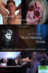 | Necro-Mancing Dennis | 2018 | EN | mp4 | 720p | Addison Graham, Grayson Lange, Clay Yearwood, Daniel Jensen, Walter Delmar, Riley Ferris, Cory Tyndall, Ish Bermudez, Blaze Urban, Quinn Jaxon, Keenan Stott, Matthew Campbell, Rashell Saucier, Andrew Dylan, Taylor Reign | |
| The Night Porter | 1974 | EN | mp4 | 720p | Dirk Bogarde, Charlotte Rampling, Philippe Leroy, Gabriele Ferzetti, Giuseppe Addobbati, Isa Miranda, Nino Bignamini, Marino Masé, Amadeo Amodio, Piero Vida, Geoffrey Copleston, Manfred Freyberger, Ugo Cardea, Nora Ricci, Piero Mazzinghi, Kai-Siegfried Seefeld | ||
| Nighthawks | 1978 | EN | mp4 | 720p | Ken Robertson, Derek Jarman, Tony Westrope, Rachel Nicholas James, Maureen Dolan, Stuart Turton, Clive Peters, Robert Merrick, Frank Dilbert, Peter Radmall, Ernest Brightmore, John Angel | ||
| El niño que no quería matar | 2020 | EN | mp4 | 1080p | Julio Carrillo, Santiago Cáceres, Javiera Arnillas, Natalia Bonifaz, Marina Kapoor, Omar Alosilla | ||
| No Skin Off My Ass | 1991 | EN | mp4 | 480p | Bruce LaBruce, G.B. Jones, Klaus von Buecker, Caroline Azar, Beverly Breckenridge, Laurel Pervis, Kate Ashley, Jena von Brücker | ||
 |
La noche | 2016 | ES | mp4 | 480p | Edgardo Castro, Paula Ituriza, Dolores Guadalupe Olivares, William Prociuk, Federico Figari, Luis Leiva | |
| The Normal Heart | 2014 | EN | mp4 | 1080p | Mark Ruffalo, Jim Parsons, Matt Bomer, Julia Roberts, Jonathan Groff, Taylor Kitsch, Alfred Molina, Denis O'Hare, Finn Wittrock, Remy Auberjonois, Joe Zaso, BD Wong, Danielle Ferland, Corey Stoll, Joe Mantello | ||
| Oasis | 2012 | EN | mp4 | 720p | Cesar DeFuentes, Matthew Lynn, Jorge Ameer, Brittany Devries, Frank Munoz | ||
| On the Fringe of Wild | 2021 | EN | mp4 | 1080p | Harrison Browne, Cameron Stewart, Mikael Melo, Andrew Bee, Audrey Nesbitt, Adam Jenner | ||
| On the Road | 2012 | EN | mp4 | 720p | Garrett Hedlund, Sam Riley, Kristen Stewart, Amy Adams, Tom Sturridge, Kirsten Dunst, Viggo Mortensen, Danny Morgan, Alice Braga, Elisabeth Moss, Terrence Howard, Sarah Allen, Kim Bubbs, Eric Davis, Giselle Itié, Steve Buscemi, Giovanna Zacarías, Coati Mundi, John Burnside, Omoze Idehenre, Kaniehtiio Horn, Joe Chrest | ||
| Once A Year On Blackpool Sands | 2021 | EN | mp4 | 720p | Kyle Brookes, Macaulay Cooper, Wendy Laurence James, Elizabeth Coombs, Linda Clark, Dominic McCavish, Joel McVeagh, Julia Haworth, Michał Szpak, Steven Arnold, Tony Richardson, Vicki Glover, Laura Ellen Wilson, Charlie Price | ||
| Open | 2010 | EN | mp4 | 720p | Gaea Gaddy, Morty Diamond, Daniel Luedtke, Tempest Crane, Jendeen Forberg | ||
| Otto; or, Up with Dead People | 2008 | EN | mp4 | 1080p | Jey Crisfar, Marcel Schlutt, Nicholas Fox Ricciardi, Keith Böhm, Olivia Barth, Christophe Chemin, Katharina Klewinghaus, Stephanie Heinrich, John Edward Heys, Max Di Costanzo, Orion Zombie, John Wloch, Guido Sommer, Elliat Graney-Saucke, Ramin Farhadi, Nicolas Koenigsknecht, Daniel Grothe, Émile Dunichaud, Gio Black Peter, Jürgen Seipel, Susanne Sachße, Ferdinand Marian, Torsten Meyer, Pascal Herr, Ena Schnitzlbaumer, Stefanie Reißnecker, Wiebke Hoogklimmer, Nina Kharytonova, Asha Mines, Peter Jung, Mahsun Erdogan, Serhat Erdogan, Arturam Oruç, Stefan Kuschner, Peter Bürger, Mo, Alfio Tombolato, Fashion P.D.G., Valentin Plessy, Nicolas Mallet, Kevin Murphy, Emanuele Rizzi, Burak Icer, Gökan Alabay, Haçi Alabay, Christophe Linéré, Frédéric Gies, Kembra Pfahler, Rudy Marchal, Christian Modersbach, Laura Berger, Pedro Sobisch, Mandy Berger, Efe Yildiz, Nils Jacobson, Stan Steel, Michael Shade, Marcel Hoffmann, Florian Manns, Lars Freimann, Xavier Stentz, Fabrice, Josh Ford | ||
| Out | 2020 | EN | mp4 | 1080p | Bernadette Sullivan, Kyle McDaniel, Caleb Cabrera, Matthew Martin | ||
| Out Loud | 2011 | EN | mp4 | 480p | Rudy Moarbes, Ali Rhayem, Jad Hadid, Michel Sarkiss, Eliane Kerdy, Jean Kobrosly | ||
| Oy Vey! My Son Is Gay! | 2009 | EN | mp4 | 1080p | Lainie Kazan, Saul Rubinek, Vincent Pastore, John Lloyd Young, Jai Rodriguez, Bruce Vilanch, Carmen Electra, Shelly Burch, Stanislav 'Slava' Medvedenko, Alexandra Mamaliger, Eddie Levi Lee, Kyle Deluca, Heiko Obermöller, Phyllis Silver, Rachel Handler, Patricia Henderson, Tom Fridley, Jerry Sciarrio, Pete Moroz, Karen-Eileen Gordon, Danny Bental, Jovan Obando, Leslie Lowe, Khalil Beznaiguia, Dillon McNaight, Jeff Scarone, Michael Adams, Brandon O'Neill, Josef Mamaliger, Richard Murken, Chauncey Jones, Svetlana Anufrieva, Brian Russo, Jerry L. Buxbaum, Scott K. Hills, Steve Baldwin, John B. Daniels, Troy A. Jenkins, Fred Swink, Tony DeStefano, Timothy Christian Jansen, Scott Alan Berk, Aaron Fink, Kent Kimball, Shane Mabrey, Anne Lillian Mitchell, Lance Mitchell, Jared Wagner | ||
| Paolo | 2009 | PT | mp4 | SD | Magaly del Castillo, Paolo Reategui, Marines Severiano | ||
| Papi Chulo | 2018 | EN | mp4 | 1080p | Matt Bomer, Alejandro Patiño, Elena Campbell-Martinez, Wendi McLendon-Covey, Michael Shepperd, Tommie Earl Jenkins, Shaughn Buchholz, Tom Beyer, Irene White, Caitlin Kimball, Marisa Szczepan, Brandon Kyle Goodman, Blaine Swen, Martin Morales, Nick Bush, Blaine Mizer, Rosemary Dominguez, Rolando Molina, Patricio Doren, Dan Crane, Monica Garcia, Frankie Quinones, Hector G. Torres, Daniel Edward Mora, Benjamin Revolori, Edgar Arreola, Kevin Sifuentes, Thom Rivera, Mario Revolori, Glenn Taranto, Michelle Ortiz, Ryan Guzman, D'Arcy Carden, Mike Ferguson, Jose J. Santana, David Saucedo, Rosalio Garcia | ||
| Paragraph 175 | 2000 | EN | mp4 | SD | Rupert Everett | ||
 |
La Partida | 2013 | ES | mp4 | 576p | Milton García, Reinier Díaz, Jenifer Rodríguez, Beatriz Méndez, Mirta Ibarra, Toni Cantó | |
| Parting Glances | 1986 | EN | mp4 | 480p | Richard Ganoung, John Bolger, Steve Buscemi, Adam Nathan, Kathy Kinney, Patrick Tull, Yolande Bavan, Andre Morgan, Richard Wall, Bob Koherr | ||
| The Pass | 2016 | EN | mp4 | 1080p | Russell Tovey, Arinzé Kene, Lisa McGrillis, Nico Mirallegro, Rory J. Saper | ||
| The Passenger | 2012 | DE | mp4 | 480p | Niklas Peters, Lynn Femme, Urs Stämpfli | ||
| The Perks of Being a Wallflower | 2012 | EN | mp4 | 1080p | Logan Lerman, Emma Watson, Ezra Miller, Mae Whitman, Kate Walsh, Dylan McDermott, Melanie Lynskey, Nina Dobrev, Johnny Simmons, Joan Cusack, Paul Rudd, Nicholas Braun, Reece Thompson, Patrick de Ledebur, Brian Balzerini, Tom Kruszewski, Julia Garner, Tom Savini, Emily Marie Callaway, Chelsea Zhang, Jesse Scheirer, Justine Nicole Schaefer, Julie Marie Schaefer, Leo Miles Farmerie, Isabel Muschweck, Adam Hagenbuch, Erin Wilhelmi, Jordan Paley, Zane Holtz, Timothy Breslin, Mark McClain Wilson, Atticus Cain, Stacy Chbosky, Dihlon McManne, Laurie Klatscher, Landon Pigg, Jennifer Enskat, William L. Thomas, Morgan Wolk | ||
| Peter von Kant | 2022 | FR | mp4 | 720p | Denis Ménochet, Isabelle Adjani, Khalil Ben Gharbia, Hanna Schygulla, Stefan Crepon, Aminthe Audiard | ||
| Pink Narcissus | 1971 | EN | mp4 | 480p | Bobby Kendall, Donald L. Brooks, Charles Ludlam | ||
| Pink Ulysses | 1990 | EN | mp4 | 480p | José Teunissen, Jos Ijland, Dolf Wilens, Erik de Bruyn, Daan Jansen, Margie Smit, Maarten Almekinders, Jack Post, Emile Poppe | ||
| The Pit and the Pendulum | 2009 | EN | mp4 | 480p | Lorielle New, Stephen Hansen, Bart Voitila, Danielle Demski, Amy Paffrath, Tom Sandoval, Michael King | ||
| Pit Stop | 2013 | EN | mp4 | 720p | Bill Heck, Marcus DeAnda, Amy Seimetz, John Merriman, Alfredo Maduro, Corby Sullivan, Bailey Bass, Heather Kafka, Yesenia Garcia, Richard C. Jones, Naila Ahmed, Justin Arnold, Charlotte Bass, Alan Berg, Karinne Berstis, Kelli Bland, Rob Conner, Charlie Dennis, Will Dotter, Katherine Fouche, David Gil Jr., Catherine Jaroschy, Case Johnson, Samantha Rae Lopez, Marcelena Mayhorn, Zack Phillips, Brian Ramos, Jace Recio, Lila Schmitz, Danielle Sweet, Danu Uribe, Salomon Villegas, Alicia Bucci, Chris J. Knight, Kelly Ritchie, Ashley Spillers | ||
| Pixote: A Lei do Mais Fraco | 1980 | EN | mp4 | 1080p | Fernando Ramos da Silva, Jorge Julião, Gilberto Moura, Edilson Lino, Zenildo Oliveira Santos, Claudio Bernardo, Israel Feres David, Jose Nilson Martin Dos Santos, Marília Pêra, Jardel Filho, Rubens de Falco, Elke Maravilha, Tony Tornado, Beatriz Segall, Emílio Fontana, Luiz Serra, Ariclê Perez, Joe Kantor, Isadora de Farias, Walter Breda, Benedito Corsi, Lineu Dias, César Pezzuoli, Fábio Tomasini | ||
| 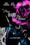 | Please Baby, Please | 2022 | EN | mp4 | 480p | Andrea Riseborough, Harry Melling, Demi Moore, Karl Glusman, Ryan Simpkins, Cole Escola, Jaz Sinclair, Alisa Torres, Karim Saleh, Jake Choi, Matt D'Elia, Jake Sidney Cohen, Yedoye Travis, Marquis Rodriguez, Dana Ashbrook, Mary Lynn Rajskub, Dalton Weaver | |
| Płynące wieżowce | 2013 | PL | mp4 | 1080p | Mateusz Banasiuk, Bartosz Gelner, Marta Nieradkiewicz, Olga Frycz, Katarzyna Herman, Izabela Kuna, Mirosław Zbrojewicz | ||
| Poison | 1991 | EN | mp4 | 720p | Scott Renderer, James Lyons, Edith Meeks, Millie White, Buck Smith, Rob LaBelle, John Leguizamo, Anne Giotta , Evan Dunsky, Susan Norman, Marina Lutz, Angela M. Schreiber, Larry Maxwell | ||
| Poltergay | 2006 | FR | mp4 | 1080p | Clovis Cornillac, Julie Depardieu, Lionel Abelanski, Gilles Gaston-Dreyfus | ||
| Poppy Field | 2021 | EN | mp4 | 720p | Conrad Mericoffer, Alexandru Potocean, Radouan Leflahi, Cendana Trifan, Ionuț Niculae, Alex Călin, Rolando Matsangos, George Pistereanu, Ela Ionescu, Mihaela Sîrbu, Valentina Zaharia, Denis Hanganu, Ruxandra Maniu, Lucian Ifrim | ||
| Pornography: A Thriller | 2009 | EN | mp4 | SD | Matthew Montgomery, Pete Scherer, Jared Grey, Walter Delmar, Dylan Vox, Steve Callahan, Wyatt Fenner, Nick Salamone, Larry Weissman | ||
| Postcards from London | 2018 | EN | mp4 | 1080p | Harris Dickinson, Jonah Hauer-King, Leonardo Salerni, Ben Cura, Leo Hatton, Shaun Aylward, Raphael Desprez, Rhys Yates, Alessandro Cimadamore, Bernardo Santos, Kiera Bell, Christopher Marsh | ||
| Poster Boy | 2004 | EN | mp4 | SD | Jack Noseworthy, Valerie Geffner, Lorri Bagley, Austin Lysy, Matthew Newton, Neal Huff, Ebon Moss-Bachrach, Michael Lerner, Kristen Schaal | ||
| Potato Dreams of America | 2021 | EN | mp4 | 1080p | Marya Sea Kaminski, Tyler Bocock, Jonathan Bennett, Lea DeLaria, Dan Lauria, Sera Barbieri, Hersh Powers, Sophia Mitri Schloss, Lauren Tewes, Lady Rizo, James Grixoni, Alycia Delmore, Woody Shticks, Cameron Lee Price, Drew Highlands, Max Willoughby, Quinlan Corbett, Nick Sage Palmieri, Paris Original, Luminous Pariah, Aaron Jin, Max Christofferson, Dexter Morgenstern, Consuelo Aduviso | ||
| A Prayer Before Dawn | 2017 | EN | mp4 | 1080p | Joe Cole, Vithaya Pansringarm, Pornchanok Mabklang, Somrak Khamsing, Nicolas Shake, Panya Yimmumphai, Sura Sirmalai, Sakda Niamhom, Billy Moore, Komsan Polsan, Chaloemporn Sawatsuk | ||
| Prayers for Bobby | 2009 | EN | mp4 | 1080p | Ryan Kelley, Sigourney Weaver, Henry Czerny, Dan Butler, Austin Nichols, Carly Schroeder, Shannon Eagen, Scott Bailey, Rebecca Louise Miller | ||
| The Pretty Boys | 2011 | EN | mp4 | SD | Josh Beren, Dale Dymkoski | ||
| 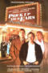 | Prick Up Your Ears | 2017 | EN | mp4 | 1080p | Gary Oldman, Alfred Molina, Vanessa Redgrave, Frances Barber, Lindsay Duncan, Julie Walters, Wallace Shawn, Janet Dale, Dave Atkins, Garry Cooper, Roger Lloyd Pack, Sean Pertwee, Helena Michell, Selina Cadell, Neil Dudgeon, Richard Wilson, Steven Mackintosh, Karl Johnson, David Bradley, Joan Sanderson, Spencer Leigh, Neville Smith, John Salthouse, David Cardy, John Moffatt, Charles McKeown, Margaret Tyzack, James Grant, Eric Richard, William Job, Rosalind Knight, Angus MacKay, Linda Spurrier, Charlotte Wodehouse, Bert Parnaby, Liam De Staic, Antony Carrick, Christopher Guinee, Stevan Rimkus, Anthony Douse, John Kane, Joanne Connelly, Noel Davis, Philippa Davies, Julie Legrand, Jane Blackburn, Stella Richman, Jonny Phillips, Richard Ireson, Ahmed Elgheur, Moktar Dagmouni, Sian Thomas, Stephen Bill, Max Stafford-Clark, Simon Adams, Mark Brignal, Robin Hooper, Derek Jarman, Michael Müller | |
| Priest | 1994 | EN | mp4 | 1080p | Linus Roache, Tom Wilkinson, Robert Carlyle, Cathy Tyson, Lesley Sharp, Robert Pugh, Christine Tremarco, James Ellis, Tony Booth, Paul Barber, Rio Fanning, Marsha Thomason, Bill Dean, Gilly Coman, Fred Pearson, Jimmy Gallagher, Matyelok Gibbs, John Bennett, Mandy Walsh, Valerie Lilley, Kevin Knapman, Mauricio Venegas, Jimmy Coleman | ||
| El príncipe | 2019 | ES | mp4 | 1080p | Juan Carlos Maldonado, Alfredo Castro, Gastón Pauls, Lux Pascal, Catalina Martin, Paola Volpato, Sebastián Ayala, Jaime Leiva, Nicolás Zárate, Cesare Serra, Paula Zúñiga, José Antonio Raffo, Andrés Pozo, Andrés Sánchez, Juan Carlos Corales, Claudio Rodríguez, Óscar Hernández, Franco Toledo, Carlos Donoso, Juan Olguin, Casandra Day, Karen Pradenas, Felix Venegas, Gonzalo Gajardo, Nicolás Rojas, Francisco González Hermosilla, Omar Meza, Daniel Antivilo, Andrés Rebolledo, Francisco Dañobeitía, Pablo Pinochet | ||
| Quand on a 17 ans | 2016 | FR | mp4 | 720p | Sandrine Kiberlain, Kacey Mottet Klein, Alexis Loret, Corentin Fila, Mama Prassinos | ||
| Queer | 2015 | EN | mp4 | 720p | Taylor Hallman, Keigan Buffett, Ember Vail, Taylor-Jessica Kelly, Scott Norris, Nicholas Surges | ||
 |
Queer Japan | 2020 | EN, JA | mp4 | 1080p | Aya Kamikawa, Gengoroh Tagame, Leslie Kee, Akira the Hustler, Hiroshi Hasegawa, Tomato Hatakeno, Atsushi Matsuda, Nogi Sumiko, Vivienne Sato | |
| Querelle | 1982 | EN | mp4 | 720p | Brad Davis, Franco Nero, Jeanne Moreau, Laurent Malet, Hanno Pöschl, Günther Kaufmann, Burkhard Driest, Roger Fritz, Dieter Schidor, Natja Brunckhorst, Robert van Ackeren, Werner Asam, Isolde Barth, Axel Bauer, Neil Bell, Gilles Gavois, Wolf Gremm, Karl-Heinz von Hassel, Y Sa Lo, Michael McLernon, Frank Ripploh, Karl Scheydt, Vitus Zeplichal, Isa Jank | ||
| The Raspberry Reich | 2004 | EN | mp4 | 720p | Susanne Sachße, Daniel Bätscher, Andreas Rupprecht, Dean Monroe, Anton Z. Risan | ||
| The Raven | 2007 | EN | mp4 | 480p | Andre Velts, Brian Stokes Mitchell, Litha Booi, André Dellow, Tristan McConnell, Colin Sutcliffe, Justin Mancer, Justin McGibbon, Nicholas Wickstrom, Ivan Botha, Graeme Richards, Traverse Le Goff, Rick Armando, Joy Lucelle De Gee, Zipporah Benn, Richard Johnson, John Jordan | ||
| Reflections in a Golden Eye | 1968 | EN | mp4 | 720p | Elizabeth Taylor, Marlon Brando, Brian Keith, Julie Harris, Zorro David, Gordon Mitchell, Irvin Dugan, Fay Sparks, Robert Forster, Ed Metzger, Ted Beniades, Jed Curtis, Frank Flanagan, Trent Gough, Harvey Keitel, Al Mulock, Robert Rietti, Douglas Stark, Friedrich von Ledebur | ||
| Release | 2010 | EN | mp4 | 1080p | Daniel Brocklebank, Wayne Virgo, Garry Summers, Bernie Hodges, Oliver Park, Doug Kirby, Tony Banham | ||
| Remarkable Shades of Gay | 2015 | EN | mp4 | 720p | Katherine Brunk, Taymour Ghazi, Craig Jordan, Nathan Mohebbi | ||
| Required Field | 2016 | EN | mp4 | 480p | Todd Verow | ||
| Ripples of Water | 2019 | EN | mp4 | 720p | Aj Ciccotelli | ||
 |
Romeos | 2011 | EN | mp4 | SD | Rick Okon, Maximilian Befort, Liv Lisa Fries, Felix Brocke, Silke Geertz, Gilles Tschudi | |
| Roomies | 2015 | EN | mp4 | 720p | Josh Milk, Johan J | ||
| S Is for Sexy | 2008 | EN | mp4 | 480p | Jason Bushman, Rick Hammerly, Damien Rea, Michaline Babich, Reza Rameri | ||
| Sagat | 2011 | EN | mp4 | SD | François Sagat, Chi Chi LaRue, Serge Hefez, Christophe Honoré, Bruce La Bruce, Cyrille Marie, Brian Mills, Dean Monroe, Olivier Nicklaus, Caroline Sagat, Jean-Luc Verna | ||
| Saint-Narcisse | 2020 | EN | mp4 | 720p | Félix-Antoine Duval, Tania Kontoyanni, Alexandra Petrachuk, Angèle Coutu, Andreas Apergis, Myriam Côté, Marcelo Arroyo, Jillian Harris, Alice Moreault, Anthony Belsile, Patrick Keeler, Michel Eid, Thomas Niles, Jonathan Emond, Cameron Geller | ||
| Salò o le 120 giornate di Sodoma | 1975 | EN | mp4 | 1080p | Paolo Bonacelli, Giorgio Cataldi, Umberto Paolo Quintavalle, Aldo Valletti, Hélène Surgère, Sonia Saviange, Sergio Fascetti, Bruno Musso, Franco Merli, Rinaldo Missaglia, Giuseppe Patruno, Guido Galletti, Efisio Etzi, Claudio Troccoli, Fabrizio Menichini, Maurizio Valaguzza, Ezio Manni, Caterina Boratto, Elsa De Giorgi, Faridah Malik, Graziella Aniceto, Renata Moar, Dorit Henke, Antiniska Nemour, Benedetta Gaetani, Olga Andreis, Giuliana Melis | ||
 |
Salvation Army | 2014 | EN | mp4 | 1080p | Said Mrini, Karim Ait M'Hand, Amine Ennaji, Frédéric Landenberg, Guillaume Bonnier, Sandra Korol, Felipe Castro | |
| Scorpio Rising | 1964 | EN | mp4 | 720p | Ernie Allo, Bruce Byron, Steve Crandell, Johnny Dodds, Bill Dorfman, Nelson Leigh | ||
| 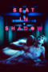 | Seat in Shadow | 2016 | EN | mp4 | 720p | David Sillars, Marcella Mclntosh, Jonathan Leslie, Jo McQuaid, Lee Partridge, Gordon Robertson, Mathew Scott, Joe Venters | |
| Sebastiane | 1976 | LA | mp4 | 720p | Leonardo Treviglio, Barney James, Neil Kennedy, Richard Warwick, Donald Dunham, Ken Hicks, Janusz Romanov, Steffano Massari, Daevid Finbar, Gerald Incandela, Robert Medley | ||
| The Secret Kiss | 2017 | EN | mp4 | 720p | Tom Beedim, Sert Fetti, Freddie Wintrip | ||
| The Secret Path | 2014 | EN | mp4 | 576p | Darren Bransford, Henry Regan, Miguel Campbell-Lewis | ||
| The Seed | 2018 | EN | mp4 | 1080p | Yann André, Vic Valentine | ||
| Seeing Heaven | 2011 | EN | mp4 | SD | Alexander Bracq, Denton Lethe, Thomas Thoroe, Maximo Salvo, Anthony Styles, Gunnar Hojem, Andrew Shire, Nic Gilder, Scott Van Der Merwe, Jamie Karl Cross, Piotr Blak, Israel Cassol | ||
| The Seminarian | 2010 | EN | mp4 | 720p | Mark Cirillo, Linda J. Carter, Philip Willcox, Alex Matute, Javier Montoya, Matthew Hannon, Derek Renn, Jessica Blythe Kemejuk, Jason Grasi, Eric Parker Bingham, Jo McLachlan, Ray Barnhart | ||
 |
Sequin in a Blue Room | 2021 | EN | mp4 | 1080p | Anthony Brendan Wong, Conor Leach, Ed Wightman, Jeremy Lindsay Taylor, Samuel Barrie, Tsu Shan Chambers, Simon Croker, Darren Kumar, Nancy Dennis, Damian de Montemas, Patrick Cullen | |
| Serodiscordantes | 2019 | ES | mp4 | 1080p | Alejandría Cinque, Cachorro Lozano | ||
| Sex Positive | 2009 | EN | mp4 | 480p | Richard Berkowitz, Michael Callen, Larry Kramer, Susan Brown, Sean O. Strub, Norma Connolly, Gabriel Rotello, Edmund White, Michael Lucas | ||
| Shadowlands | 2018 | EN | mp4 | 720p | Charlie David, Sean C. Dwyer, Brian Woodford, Brian Michael Jensen, Basil Hendy, Kato Alexander | ||
| Shank | 2009 | EN | mp4 | 576p | Wayne Virgo, Marc Laurent, Tom Bott, Alice Payne, Garry Summers, Bernie Hodges, Louise Fearnside, Oliver Park, Earl Virgo, Felicia Pearce, Christian Martin, Remy Taylor, James Collins, Lauren Ponsford, Corinne Riley, Hannah Lewis, Kevin Thomas Haines, Hannah Jones, Sean Morris, Theo Melling, Nina Rice, Darren Flaxstone | ||
| Shared Rooms | 2016 | EN | mp4 | 720p | Christopher Grant Pearson, Alec Manley Wilson, Ryan Weldon, Alexander Neil Miller, Justin Xavier Smith, Robert Werner, Daniel Lipshutz, David Vaughn, Eric Allen Smith, Christopher Patrino, Enzo Nova | ||
| Shelter | 2007 | EN | mp4 | 720p | Trevor Wright, Tricia Pierce, Brad Rowe, Tina Holmes, Jackson Wurth, Katie Walder, Matt Bushell, Ross Thomas, Albert Reed, Joy Gohring, Don Margolin, Alejandro Patino, Caitlin Crosby, Alicia Sixtos, Tarek Zohdy, Robbi Chong, Dominic Figlio, Christina Blevins | ||
| 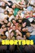 | Shortbus | 2006 | EN | mp4 | 720p | Sook-Yin Lee, Paul Dawson, PJ DeBoy, Jay Brannan, Lindsay Beamish, Raphael Barker, Peter Stickles, Ray Rivas, Bitch, Shanti Carson, Justin Hagan, Miriam Shor, Bradford Scobie, Reg Vermue, Adam Hardman, Alan Mandell, Jan Hilmer, Stephen Kent Jusick, Yolonda Ross, Jocelyn Samson, Daniela Sea, Rachael C. Smith, Derek Jackson, Jonathan Caouette, Mary Beth Peil, Tristan Taormino, Justin Bond | |
| Sibak | 1994 | EN | mp4 | 480p | Alex del Rosario, Soxy Topacio, John Mendoza | ||
| Siberia and Him | 2019 | EN | mp4 | 720p | Ilya Shubochkin, Viatcheslav Kopturevskiy, Anastasiya Voskresenskaya | ||
| Sideline Secrets | 2006 | EN | mp4 | 480p | James Townsend, Alex Wilson, Dan Swett, Sarah Kelly, David Wright, Brandon Alexander III, Michael Haboush, Steven Vasquez, Rick Bolander, Jason Shepard, Laura Reilly, Ryan Bauer, William Ngo, Dylan Jordan, Chase Fleming, A.J. Damianus | ||
| Siempre sí | 2019 | ES | mp4 | 1080p | Gerardo Torres Rodríguez, Pavel Akindog, Anty de la Vega, Lalo Santos, Irvin Morlag, Franco Ruiz, Andrés Sánchez, Effy Oropeza, Christo Cansio | ||
| Silent Voice | 2020 | EN | mp4 | 720p | Reka Valerik | ||
| Sin ti no puedo | 2022 | ES | mp4 | 1080p | Mauricio Ochmann, Maite Perroni, Alfonso Bassave, Pedro Casablanc, Elena Irureta, Juan de Vera, Lucía de la Fuente, Carlos Olalla, Mercedes Hoyos, Ingrid Palomares, Rubén Ochandiano, Jorge Motos, Alba Gutiérrez | ||
| A Single Man | 2010 | EN | mp4 | 1080p | Colin Firth, Julianne Moore, Nicholas Hoult, Matthew Goode, Jon Kortajarena, Paulette Lamori, Ryan Simpkins, Ginnifer Goodwin, Teddy Sears, Paul Butler, Aaron Sanders, Aline Weber, Keri Lynn Pratt, Jenna Gavigan, Alicia Carr, Lee Pace, Adam Shapiro, Ridge Canipe, Elisabeth Harnois, Erin Daniels, Marlene Martinez, Nicole Steinwedell, Tricia Munford, Jon Hamm, Melissa Goodwin Shepherd | ||
| A Siren in the Dark | 2009 | EN | mp4 | 480p | Orion Cross, James Townsend, David Beutler, Jason Dodds, Kyle Lankins, Donna Michelle, Todd Tetreault | ||
| Slutty Summer | 2004 | EN | mp4 | 576p | Casper Andreas, Christos Klapsis, Virginia Bryant, Jeffrey Christopher Todd, Lance Werth, Jesse Archer, Jamie Hatchett | ||
| Small Town Gay Bar | 2007 | EN | mp4 | SD | Jim Bishop, Bill Curtis, Rick Gladish, Fred Phelps, Charles Smith, Justin Williams | ||
| Sodom | 2017 | EN | mp4 | 1080p | Pip Brignall, Jo Weil | ||
| Soft Lad | 2015 | EN | mp4 | SD | Daniel Brocklebank, Laura Ainsworth, Jonny Labey, Craig Stein, Mya Collins, Suzanne Collins | ||
| Solo | 2013 | EN | mp4 | 1080p | Laura Agorreca, Carlos Echevarría, Patricio Ramos, Mario Verón, Mike Zubi | ||
| Something Like Summer | 2017 | EN | mp4 | 720p | Grant Davis, Davi Santos, Ben Baur, Ajiona Alexus, Jana Lee Hamblin, Ron Boyd, Tristan Decker, Madisyn Lane, Chip Sherman, Greg James, Will Shepherd | ||
| Sommersturm | 2004 | DE | mp4 | 1080p | Robert Stadlober, Kostja Ullmann, Alicja Bachleda-Curuś, Jürgen Tonkel, Tristano Casanova, Miriam Morgenstern, Marlon Kittel, Hanno Koffler, Joseph M'Barek, Alexa Maria Surholt, Jeff Fischer, Michael Wiesner, Benjamin Vilzmann, Ludwig Blochberger, Anton Rattinger | ||
| Spetters | 1980 | NL | mp4 | 720p | Hans van Tongeren, Renée Soutendijk, Toon Agterberg, Maarten Spanjer, Marianne Boyer, Rutger Hauer, Jeroen Krabbé, Peter Tuinman, Saskia van Basten-Batenburg, Yvonne Valkenburg, Ab Abspoel, Rudi Falkenhagen, Hans Veerman, Ben Aerden, Kitty Courbois, Margot Keune, Jonna Koster, Hugo Metsers | ||
| Spoiler Alert | 2022 | EN | mp4 | 1080p | Jim Parsons, Ben Aldridge, Sally Field, Bill Irwin, Josh Pais, Antoni Porowski, Nikki M. James, Jeffery Self, Tara Summers, Winslow Bright, Allegra Heart, Sadie Scott, Scott Burik, Supriya Ganesh, Eleni Yiovas, Shunori Ramanathan, Kate Pittard, Paco Lozano, Christine Renee Miller, Erica Cho, Brody Caines | ||
| Squirrels | 2018 | EN | mp4 | 1080p | Todd Verow | ||
| Stage Mother | 2020v | EN | mp4 | 720p | Jacki Weaver, Lucy Liu, Adrian Grenier, Mya Taylor, Allister MacDonald, Anthony Skordi, Oscar Moreno, Jackie Beat, Hugh Thompson, Lenore Zann, Eldon Thiele, Kris Cochrane, Kirstin Howell, Mauralea Austin, Calem MacDonald, Sofia Banzhaf, Vox Smith, Grayson Bermundo, Adrian Comeau, Murlane Carew, Garrett Baer, Tyson Thompson, Callum Dunphy, Lucus Popowich, Brian Stover | ||
| Starcrossed | 2005 | EN | mp4 | SD | J.B. Ghuman Jr., Marshall Allman | ||
| Starred Up | 2014 | EN | mp4 | 1080p | Jack O'Connell, Ben Mendelsohn, Rupert Friend, David Ajala, Peter Ferdinando, Gershwyn Eustache Jnr, Anthony Welsh, David Avery, Sian Breckin, Sam Spruell, Gilly Gilchrist | ||
| Steam Room Stories: The Movie | 2019 | EN | mp4 | 1080p | Chris Boudreaux, Paris Dylan, Bob Rumnock, Forrest Hoffman, Eric D'Agostino, Isaiah Lucas, Brad Lemack, Traci Lords | ||
| Steel | 2015 | EN | mp4 | 720p | Chad Connell, David Cameron, Tamara Gorski, Erik Athavale, Mimi Kuzyk, Jason Wishnowski, John B. Lowe, Sheila Campbell, Ben Grocholski, Chris Sigurdson, Andrea del Campo, Maxine Gibson Bruce, Logan Creran, Daryl Dorge, Tyhr Trubiak, Darren Felbel, Ernie Pitts, Daniel McIntyre-Ridd, Joanne Rodriguez, Gabriel Daniels, Alan Castanaga, Jim Kirby | ||
| Stephen Fry: HIV & Me | 2007 | EN | mp4 | SD | Ross Wilson | ||
| Stonewall | 1995 | EN | mp4 | 480p | Guillermo Díaz, Frederick Weller, Brendan Corbalis, Duane Boutte, Bruce MacVittie | ||
| Stonewall | 2015 | EN | mp4 | 1080p | Jeremy Irvine, Jonny Beauchamp, Jonathan Rhys Meyers, Ron Perlman, Caleb Landry Jones, Karl Glusman, Vladimir Alexis, Alexandre Nachi, Joey King, Matt Craven, Atticus Mitchell, David Cubitt, Mark Camacho, Andrea Frankle, Kwasi Songui, Joanne Vannicola, Wilson Gonzalez Ochsenknecht | ||
| The Strange Ones | 2018 | EN | mp4 | 1080p | Alex Pettyfer, James Freedson-Jackson, Marin Ireland, Cindy Cheung, Melanie Nicholls-King, Gene Jones, Owen Campbell, Emily Althaus, Laurent Rejto, Will Blomker, Tobias Campbell, Allen Fawcett, Cliff Ferraro, Betsy Holt, Birgit Huppuch, Sara Kiener, David Sitler, Sheila Stasack, Olivia Wang | ||
| Strapped | 2010 | EN | mp4 | 720p | Ben Bonenfant, Nick Frangione, Raphael Barker, Artem Mishin, Michael Carlisi, Paul Gerrior, Carlo D'Amore, Katherine Celio, Michael Klinger, Sharon Camhi, John Kiernan, Mia Paschal, Don Seaver, Michael Vega | ||
 |
Strapped for Danger | 2017 | EN | mp4 | 1080p | Anthony Gaudette, Diego Guevara, Dan Mauro, Anna Rizzo, Johnny Sederquist, Sarah Reed, Chris Goodwin, Lars Rieck, Timothy Bonavita, Evan Clinton, Charlie Ferguson, Chris Pelletier, Brandon Grimes, Matthew Menendez, Chad Michael, Hannah Heckman-McKenna, Lee Rush, Aidan Laliberte, Graham Stokes, Michael Thurber, Jay Walker, Geoff White, Ryan Hanley, Ashley Harmon, T.J. Frizzi, Mark-Eugene Garcia | |
| Strapped for Danger II: Undercover Vice | 2020 | EN | mp4 | 720p | Sean Brown, Chris Fisher, Sarah Reed, Samantha Acampora, Ricky Irizarry, Alec Farquharson, Victoria Paradis, Anthony Rainville, Cardryell Truss, Graham Strokes, Evan Clinton, Johnny Sederquist, Kevin Thibault | ||
| Such Good People | 2014 | EN | mp4 | 1080p | Michael Urie, Randy Harrison, Scott Wolf, Ana Ortiz, James Urbaniak, Carrie Wiita, Rick Overton, Tom Lenk, Kate Reinders, Lance Bass, Mitch Silpa, Drew Droege, Tania Gunadi, Kee Chan, Mario Diaz, Adam Huss, Jason-Shane Scott, Ryan Spahn, Allison Lane, John Halbach, Jennifer Riker, Forrest Wheeler, Sabine Eickmann, Jeff Marchelletta, Adam Bucci, Panama Red, David Avallone, Hugo Ishida, William Tao, Harry Williams Jr., Ed Horwitz, Alec Mapa, Peter Choi | ||
| Sugar | 2004 | EN | mp4 | 576p | Andre Noble, Brendan Fehr, Marnie McPhail, Haylee Wanstall, Dorothy Gordon, Maury Chaykin | ||
| Sunday Bloody Sunday | 1971 | EN | mp4 | 720p | Peter Finch, Glenda Jackson, Murray Head, Peggy Ashcroft, Tony Britton, Maurice Denham, Bessie Love, Vivian Pickles, Frank Windsor, Jon Finch, Daniel Day-Lewis | ||
| Swallowed | 2022 | EN | mp4 | 1080p | Cooper Koch, Jose Colon, Jena Malone, Mark Patton, Michael Shawn Curtis, Roe Pacheco | ||
| Swan Song | 2021 | EN | mp4 | 1080p | Udo Kier, Jennifer Coolidge, Linda Evans, Michael Urie, Roshon Thomas, Ira Hawkins, Annie Kitral, Tom Bloom, Eric Eisenbrey, Dave Sorboro, Bryant Carroll, Catherine L. Albers, Shanessa Sweeney, Ray Perrin, Shelby Garrett, Jonah Blechman, Stephanie McVay, Thom Hilton, Richard Strauss, Justin Lonesome, Rose Leininger, Cheryl Talley-Sharp, Tevis R. Marcum, Brandon Lim, Matthew Chojnacki, Tim Murray, Phaylen Fairchild, Barbie Marie, Ember Holiday Monroe | ||
| Sweat | 2018 | EN | mp4 | 1080p | Jesse Charif, Parker Marx | ||
| Taekwondo | 2016 | ES | mp4 | 720p | Gabriel Epstein, Lucas Papa, Francisco Bertín, Gaston Re, Juan Manuel Martino, Darío Miño, Nicolás Barsoff, Andrés Gavaldá, Arturo Frutos, Antonia De Michelis, Veronica Argenzio, Christian Chapi, Pilar Fridman, Agostina Fabrizi, Lisandro Galceran, Florencia Repetto | ||
| Tan Lines | 2005 | EN | mp4 | 576p | Jack Baxter, Lorena Arancibia, Jed Clarke, Curtis Dickson, Harry Catterns | ||
 |
Taxi nach Kairo | 1987 | DE | mp4 | 480p | Frank Ripploh, Christine Neubauer, Udo Schenk, Nina Schühly, Domenica Niehoff | |
| Taxi zum Klo | 2011 | DE | mp4 | 576p | Frank Ripploh, Bernd Broaderup, Orpha Termin , Peter Fahrni, Dieter Gödde, Klaus Schnee, Bernd Kröger, Markus Voigtländer, Irmgard Lademacher, Gregor Becker, Marguerite Dupont, Eberhard Freudenthal, Beate Springer, Millie Büttner, Gitta Lederer, Hans Gerd Mertens, Ulla Topf, Franco Papadu, Tabea Blumenschein, Magdalena Montezuma, Jürgen Möller, Valeska Gerstenberg, Brigitte Knigge, Hans Kellner, Ric Schachtebeck, Thomas Born, Liberace, Jürgen Thormann | ||
| Tearoom | 2007 | EN | mp4 | 480p | William E. Jones | ||
| Teenage Kicks | 2016 | EN | mp4 | 720p | Miles Szanto, Daniel Webber, Anni Finsterer, Shari Sebbens, Charlotte Best, Lech Mackiewicz, Nadim Kobeissi, Tony Poli, Ian Roberts, Andrew Lindqvist, Joshua Longhurst, Scott Marcus, Frank Stead, Geordie Robinson, Stephanie King | ||
| Tensión sexual, Volumen 1: Volátil | 2012 | ES | mp4 | 1080p | Lucas Lagré, Javier De Pietro, Francisco Ortiz Amaya, Leo Martinez, Mario Verón, Guido Gastaldi, Santiago Caamaño, Lautaro Machaca, Maximiliano Franco, Jair Toledo, Hernán Muñoa, Antonia De Michelis, Eva Benito, Jorge Carossia, Fede Guasch | ||
| Teorema | 1968 | EN | mp4 | 720p | Terence Stamp, Silvana Mangano, Massimo Girotti, Anne Wiazemsky, Andrés José Cruz Soublette, Laura Betti, Ninetto Davoli, Giovanni Ivan Scratuglia | ||
| El tercero | 2014 | ES | mp4 | 1080p | Carlos Echevarría, Emiliano Dionisi, Nicolás Armengol | ||
| Test | 2013 | EN | mp4 | 1080p | Scott Marlowe, Matthew Risch, Kevin Clarke, Kristoffer Cusick, Damon K. Sperber, Chris Mason Johnson | ||
 |
Testosterone | 2006 | EN | mp4 | 576p | David Sutcliffe, Antonio Sabàto, Jr., Celina Font, Leonardo Brzezicki, Dario Dukah, Jennifer Coolidge, Sônia Braga, Ezequiel Abeijón, Martín Borisenko, Gustavo Chapa, Daniel Di Biase, Gabriel Dottavio, Davenia McFadden, Jennifer Elise Cox, Barbara Bunge, Americo Ferrari, Wolfram Hecht, Carlos Kaspar, Miriam Manfredini, Carolina Marcovsky, Luis Mazzeo, Hector Pazos, Fabrizio Perez, Luis Sabatini, Alejandro Stulchlik, Claudio Torres, Marcos Woinsky, McCaleb Burnett, Julie Fay, Sergio Gravier, Marcelo Aguilar, Joshua Paul, Harry Havilio | Thank You | 2016 | EN | mp4 | 720p | Valentin Braun, Damian Mauro |
| That Man: Peter Berlin | 2006 | EN | mp4 | 480p | Peter Berlin, John Waters | ||
| Théo et Hugo dans le même bateau | 2016 | FR | mp4 | 720p | Geoffrey Couët, François Nambot, Georges Daaboul, Elodie Adler, Claire Deschamps, Jeffry Kaplow, Marieff Ditier, Mario Fanfani, Bastien Gabriel, Miguel Ferreira, Arthur Dumas, Emmanuel Vigier, Éric Dehak, Patrick Joseph, Rosemine Safy-Borget, Marief Guittier | ||
| The Thing About Harry | 2020 | EN | mp4 | 720p | Jake Borelli, Niko Terho, Britt Baron, Japhet Balaban, Peter Paige, Karamo Brown, Becca Hurd, Matt Lusk, Jamaal Fields-Green, Destiny Hernandez, Yando Lopez, Ismail Taher, Ryan McBride, Angelica Herndon, Kelsie Huff, Sarah Lo, Rob Wilson, Lachrisa Grandberry, Daniel Kyri, Armand Fields, Tony Tran, Carl Herzog, Liam Oh, Sam Bell-Gurwitz, Oriana Oppice, Mark Collins, Jennifer Estlin, Shanésia Davis | ||
| Three Months | 2022 | EN | mp4 | 720p | Troye Sivan, Viveik Kalra, Brianne Tju, Ellen Burstyn, Louis Gossett Jr., Judy Greer, Amy Landecker, Javier Muñoz, Steven Sean Garland, Scott Johnson, Martina Meneses, Jacinte Blankenship, Carlos Guerrero, Aaron Nedrick, Kaleka | ||
| Threesome | 1994 | EN | mp4 | 1080p | Josh Charles, Stephen Baldwin, Lara Flynn Boyle, Alexis Arquette, Martha Gehman, Mark Arnold, Michele Matheson, Joanne Baron, Jack Breschard | ||
| Tiger Orange | 2014 | EN | mp4 | 480p | Mark Strano, Frankie Valenti, Johnny Hazzard, Darryl Stephens, Gregory Marcel, Shaun Cozzens, Will McFadden, Vincent Duvall, Tara Samuel, Loanne Bishop, David F. Park, John Gowans, Ty Parker, Adrian Delcan | ||
| The Times of Harvey Milk | 1984 | EN | mp4 | 1080p | Harvey Milk, Harvey Fierstein, Anne Kronenberg, Tory Hartmann, Tom Ammiano, Jim Elliot, Henry Der, Jeannine Yeomans, Bill Kraus, Sally M. Gearhart, John Briggs, Jerry Brown, Jimmy Carter, Dianne Feinstein, David Fowler, Joseph Freitas, Terence Hallinan, George Moscone, Dan White | ||
| To Wong Foo, Thanks for Everything! Julie Newmar | 1995 | EN | mp4 | 1080p | Wesley Snipes, Patrick Swayze, John Leguizamo, Stockard Channing, Blythe Danner, Arliss Howard, Jason London, Chris Penn, Melinda Dillon, Beth Grant, Alice Drummond, Marceline Hugot, Jennifer Milmore, Jamie Harrold, Mike Hodge, Michael Vartan, RuPaul, Julie Newmar, Joel Story, Abie Hope Hyatt, Jamie Leigh Wolbert, Shea Degan, Dean Houser, Joe Grojean, Keith Reddin, Naomi Campbell, William P. Hopkins, Dayton Callie, Ron Carley, Shea R. Bredenkamp, Michael Tushaus, Patrick Tuttle, Timothy A. Zimmerman, Tim Keller, Miss Understood, Joey Arias, Allen Hidalgo, Mishell Chandler, Catiria Reyes, David Drumgold, Miss Coco Peru, Lionel Tiburcio, Bernard A. Mosca, Daniel T. 'Sweetie' Boothe, David Barton, Susanne Bartsch, Quentin Crisp, Flotilla DeBarge, Matthew Kasten, Widow Norton, CoCo LaChine, Mike Fulk, Niasse N. Mamadou, Candis Cayne, Shelton McDonald, Richard Ogden, James Palacio, Steven Polito, Philip Stoehr, Margaret H. Flynn, Billie J. Diekman, Shari Shell-True, Jimmy Ashmore, George Costacos, Chauncey Duren, Marshall Factora, Brian Ferrari, Alphonso King, Jr., Lady Bunny, Jesse Wells Martin, Chris Place, Channing Roos, Johnathan Staci Kim, Robin Williams, Lito Wilson | ||
| Toast | 2010 | EN | mp4 | 1080p | Freddie Highmore, Ken Stott, Victoria Hamilton, Oscar Kennedy, Helena Bonham Carter, Matthew McNulty, Rob Jarvis, Selina Cadell, Amy Marston, Marion Bailey, Tracey Wilkinson, Clare Higgins, Ben Aldridge, Sarah Middleton | ||
| Todos tenemos un muerto en el placard o un hijo en el clóset | 2020 | ES | mp4 | 720p | Freddie Highmore, Ken Stott, Victoria Hamilton, Oscar Kennedy, Helena Bonham Carter, Matthew McNulty, Rob Jarvis, Selina Cadell, Amy Marston, Marion Bailey, Tracey Wilkinson, Clare Higgins, Ben Aldridge, Sarah Middleton | ||
| Tom of Finland | 2017 | EN | mp4 | 1080p | Pekka Strang, Lauri Tilkanen, Jakob Oftebro, Werner Daehn, Christian Sandström, Niklas Hogner, Jessica Grabowsky, Taisto Oksanen, Seumas F. Sargent, Martin Bahne | ||
| Torch Song Trilogy | 1988 | EN | mp4 | 1080p | Anne Bancroft, Matthew Broderick, Brian Kerwin, Eddie Castrodad, Lorry Goldman, Ken Page, Harvey Fierstein | ||
| Trash | 1970 | EN | mp4 | 576p | Joe Dallesandro, Holly Woodlawn, Geri Miller, Andrea Feldman | ||
| Trick | 1999 | EN | mp4 | 720p | Christian Campbell, John Paul Pitoc, Tori Spelling, Brad Beyer, Lacey Kohl, Steve Hayes, Will Keenan, Lorri Bagley, Joey Dedio, Kevin Chamberlin, Kate Flannery, Missi Pyle, Debbie Troche, Miss Coco Peru, Nat DeWolf, Eric Bernat, Michele Brilliant, Scottie Epstein, Helen Hanft, George Costacos, Ralph Cole Jr. | ||
| The Trip | 2002 | EN | mp4 | SD | Larry Sullivan, Steve Braun, Jill St. John, Ray Baker, Sirena Irwin, Alexis Arquette, Art Hindle, Julie Brown | ||
| Triple Crossed | 2013 | EN | mp4 | 576p | Jack Brockett, Brent Corrigan, Laura Reilly, Tellier Killaby, Addison Graham, Steven Tylor O'Connor, Ashley Ahn, Ward Bodner, Matthew Campbell, Joshua Dinner, Jude Lanston, Ryan Massey, Chad Siwik, Tammy Tolene, Cory Tyndall, Steven Vasquez, Jill Zimmer | ||
| Trivial | 2017 | EN | mp4 | 720p | Valentin Braun, Yann André, Gaspard | ||
| Truth | 2013 | EN | mp4 | 720p | Sean Paul Lockhart, Rob Moretti, Blanche Baker, Rebekah Aramini | ||
| Tucked | 2019 | EN | mp4 | 1080p | Derren Nesbitt, Jordan Stephens, April Pearson, Steve Oram, Lucy-Jane Quinlan, Ruben Crow, Joss Porter, Brendon Burns, Stephanie Diane Starlet, Izi Snowden, Richard Hills, Aslan Steel, Jai Battrick, Marina Simoni, Raphaella Crow, Zannah Hodson | ||
| Tumbledown | 2013 | EN | mp4 | 576p | Brad Hallowell, Todd Verow, Brett Faulkner | ||
| The Two Of Us | 1987 | EN | mp4 | SD | Jason Rush, Lee Withlock, Jenny Jay, Zoë Nathenson, Kathy Burke, James McKenna | ||
| Under The Rain | 2019 | EN | mp4 | 1080p | Valentin Braun, Anteo Chara, Markus Reid, Enki Babylon | ||
| Unhappy Birthday | 2011 | EN | mp4 | 480p | Christina de Vallee, Jonathan Keane, David Paisley, Jill Riddiford | ||
| Unhung Hero | 2013 | EN | mp4 | 720p | Jonah Falcon, Dan Savage, Brian Spitz, Annie Sprinkle, James Tracy, Patrick Moote | ||
| Vacationland | 2006 | EN | mp4 | 480p | Brad Hallowell, Gregory J. Lucas, Hilary Mann, Jennifer Stackpole, Michael Dion, Charles Ard | ||
| Vampire Boys | 2011 | EN | mp4 | 480p | Christian Ferry, Jason Lockhart, Dylan Vox, Jess Allen, Tanner Acord, Ryan Adames, Zasu, Marlene Mc'Cohen, Walter Delmar, Greg McKeon, Michael Shoel, Creep Creepersin | ||
 |
Vampire Boys 2: The New Brood | 2013 | EN | mp4 | 480p | David Alanson Bradberry, Jon Euler, Rob Hoflund, Ronnie Kerr, Will Branske, Quinn Jaxon, Zasu, Gerard Majella Lawrence, Emily Lawrence, Cortland Cline, Sebastian Liczner, Kenneth Favell, Bacchus Stuart, Jay Triggs, Brett R. Miller, Chase Klein, Shawn C. Phillips, Marlene Mc'Cohen, Greg McKeon, Walter Delmar | |
| 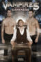 | Vampires: Brighter in Darkness | 2011 | EN | mp4 | 720p | Dan Briggs, Rhys Howells, Rebecca Eastwood, Tim Benge, Abigail Law-Briggs, Kyle Chester, James MacCorkindale, Dorival Mota, Ant Canavan, Richard Marshall, Richard Sherwood, Sebastien Sprysak | |
| Velvet Goldmine | 1998 | EN | mp4 | 720p | Ewan McGregor, Christian Bale, Jonathan Rhys Meyers, Janet McTeer, Toni Collette, Eddie Izzard, Micko Westmoreland, Alastair Cumming, Emily Woof, Joseph Beattie, Michael Feast, Lindsay Kemp, Ganiat Kasumu, Lee Mark Jones | ||
| 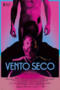 | Vento Seco | 2020 | EN | mp4 | 720p | Leandro Faria Lelo, Allan Jacinto Santana, Renata Carvalho, Rafael Teóphilo, Mel Gonçalves, Del Neto, Larissa Sisterolli, Guilhotina Guinle, Marcelo D'Avilla, Bruno Fernandes, Wilker Rodrigues, Marcelo Souza e Silva, Sajoão, Thiago Silva | |
| A Very British Sex Scandal | 2007 | EN | mp4 | 480p | Nicholas Le Prevost, Harriet Eastcott, Barny Clevely, Sam Heughan, Martin Hutson, Roger Barclay, Eric Carte, Orlando Wells, William Chubb, Karl Davies, Richard Lintern, Roger Ashton-Griffiths, Steven Mackintosh, Kevin Colson | ||
| Victim | 1961 | EN | mp4 | 1080p | Dirk Bogarde, Sylvia Syms, Dennis Price, Nigel Stock, Peter McEnery, Anthony Nicholls, Norman Bird, Margaret Diamond, Hilton Edwards, John Barrie, Mavis Villiers, Derren Nesbitt, Charles Lloyd Pack | ||
| Viharsarok | 2014 | EN | mp4 | 1080p | András Sütö, Ádám Varga, Sebastian Urzendowsky, Lajos Ottó Horváth, Enikő Börcsök, Zita Téby, Uwe Lauer, Kristóf Horváth, Gábor Szabó, Szabolcs Fábián, Zsolt Nyári, Zsolt Horváth, Dániel Szerémy, Péter Herczegh, Attila Pomlényl, Viktor Forgács, Ádám Langó, Gellért Jaglcza, Adrienn Erdélyi, Eszter Csépai, Cintia Korsós, Kitti Farkas, Gábor Harsai, Gyula Hajdú, Miklós Dr. Réfy, Jánosné Simon, Mónika Havasi, Brigitta Rosenthal, Szilvia Ambrusné Radnal, Ferencné Takács, Lászlóné Gál, Lajos Mák, Jánosné Székely Imre, Rozálla András, Jánosné Bagó, Rózsa Szimilkóné Nagy, Ignácné Jagicza, Tamásné Markela, Sándorné Mácsai, Jenoné Geri, István Csorba, Károly Szekszárdi, Soma Varga, Attila Ambrus, Balázs Ambrus, Tamara Tóth, György Benedek, László Tóth, Michel Victor, Sebastian Berei, Norbert Karasi, Gyula Pátkai, László Székely, István Sebök, Tamás Rajnai, Dániel Szerencsi, Sándor Nagy, Dániel Karacs, János Tarjáni, Dávid Vadász, Gergö Balázs, Benedek Seprényi, Lajos Barta, Attila Zsíros, Richárd Czipra, Roland Kiss, Zsolt Papp, Dániel Karip, Zoltán Tüskés, Péter Szalontai, Patrik Kelemen, Viktor Árpási, András Menyhért, Pál Palotal, József Rádóczi, Gábor Bokor, István Ladjánszki, Tibor Balogh, László Mészáros, László György Tóth, Gábor Balázsi, Tibor Gáspár, András Keserü, István Szakács | ||
| Voor een verloren soldaat | 1992 | EN | mp4 | 480p | Maarten Smit, Jeroen Krabbé, Andrew Kelley, Freark Smink, Elsje de Wijn, Derk-Jan Kroon, Wiendelt Hooijer, Iris Misset, Gineke de Jager, Tatum Dagelet, Marie-José Kouwenhoven, Valerie Valentine, William Sutton, Andrew Butling, Andrew Cassani | ||
| Waiting in the Wings: Still Waiting | 2018 | EN | mp4 | 720p | Jeffrey A. Johns, Joe Abraham, Rena Strober, Adam Huss, Lee Meriwether, Blake Peyrot, Rebekah Kochan, Harrison White, Chita Rivera, Cindy Williams, Bruce Vilanch, Patricia Richardson, Sally Struthers, Ed Asner, Seth Rudetsky, Leanza Cornett | ||
| Wake Up, Leonard | 2022 | EN | mp4 | 720p | Nigel DeFriez, Kira Pearson, Kanoa Goo, Dominique Toney, Gavin Turek, Bruce Bundy, Kat Mills Martin | ||
| The War Boys | 2009 | EN | mp4 | 720p | Benjamin Walker, Peter Gallagher, Brian J. Smith, Victor Rasuk, Greg Serano, Debrianna Mansini, Maria Bethke | ||
| Watch Out | 2008 | EN | mp4 | 480p | Matt Riddlehoover, Amy Kelly, Peter Stickles, Jeff Dylan Graham, Jillian Lauren, Miriam Climenhaga, Starina Johnson, Lady Monster, Frankie Krainz, Betti O, Cameron DeVictor, Thashana McQuiston, Nairba Sirrah, Kitty Mitchell | ||
| The Wedding Banquet | 1993 | EN | mp4 | 1080p | Gua Ah-leh, Sihung Lung, May Chin, Winston Chao, Mitchell Lichtenstein, Neal Huff, Michael Gaston, Ang Lee, Mason Lee, Dion Birney | ||
| A Wedding Most Strange | 2011 | EN | mp4 | 480p | Chris Finch, Stephen Walker | ||
| Weekend | 2011 | EN | mp4 | 720p | Tom Cullen, Chris New, Jonathan Race, Laura Freeman, Loreto Murray | ||
| Ein Weg | 2017 | DE | mp4 | 1080p | Mike Hoffmann, Mathis Reinhardt, Yvonne Döring, Peer Martiny | ||
| Were the World Mine | 2009 | EN | mp4, mp4 | 1080p, SD | Tanner Cohen, Judy McLane, Zelda Williams, Wendy Robie, Jill Larson, Ricky Goldman, Nathaniel David Becker, Christian Stolte, David Darlow, Parker Croft, Brad Bukauskas, Reid Dawson, Alexander Aguilar, Yoni Solomon, Colleen Skemp, Ken Gasch | ||
| What We Do in the Shadows | 2014 | EN | mp4 | 1080p | Taika Waititi, Jemaine Clement, Jonny Brugh, Cori Gonzalez-Macuer, Stuart Rutherford, Ben Fransham, Jackie van Beek, Elena Stejko, Jason Hoyte, Karen O'Leary, Mike Minogue, Chelsie Preston Crayford, Ian Harcourt, Ethel Robinson, Brad Harding, Isaac Heron, Yvette Parsons, Madeleine Sami, Aaron Jackson, Morgana Hills, Morag Hills, Frank Habicht, Moose Kapua, Denis Welch, Mario Gaoa, Kura Forrester, Luke Bonjers, Rhys Darby, Simon Vincent, Cohen Holloway, Duncan Sarkies, Nathan Meister, Tanemahuta Gray, Nathan Gray, Ruby Vincent, Jaxon Cook, Matthew Harvey-White, Matt Dravitzki, Roland Hunter, Stan Alley, Lucy Marinkavich, Melanie Hamilton, Ana Flaherty, Aaron Lewis, Belle Gwilliam, Rodney Cook, Jennifer Martin, Emma Draper, Natalie Crane, Emma Smith | ||
| Whatever Happened to the Gender Benders? | 2005 | EN | mp4 | 480p | Danny Webb, Marc Almond, David Bowie, Boy George, Rusty Egan, Robert Elms, Princess Julia, Martin Kemp, Stephen Linnard, Marilyn, Steve Norman, Philip Salon, Rick Sky, Steve Strange, Chris Sullivan, Pinkie Tessa, Rosemary Turner, Tony Hadley | ||
| Wilde | 1997 | EN | mp4 | 1080p | Stephen Fry, Jude Law, Vanessa Redgrave, Jennifer Ehle, Michael Sheen, Orlando Bloom, Jason Morell, Jamie Lee | ||
| Wildhood | 2021 | EN | mp4 | 720p | Phillip Lewitski, Michael Greyeyes, Joel Thomas Hynes, Savonna Spracklin, Jordan Poole, Steve Lund, Joshua Odjick, Mary-Colin Chisholm, Callum Dunphy, Bailey Maughan, Avery Winters-Anthony, Samuel Davison, Ursula Calder, Trevor Murray Tattrie, Thom Payne, Desna Michael Thomas, Bobby Pierro, Guillermo Knockwood, John R. Sylliboy, Zach Tovey, Becky Julian, Ben Ryan, Griffin Paul, Fabien Melanson, Matthew Martin, Lara Lewis, Max Brooks, Joseph Tonen, Sebastian Foole | ||
| Wittgenstein | 1993 | EN | mp4 | 1080p | Clancy Chassay, Karl Johnson, Michael Gough, Tilda Swinton, Kevin Collins, Nabil Shaban, Sally Dexter, Lynn Seymour, Jill Balcon, Gina Marsh, Vanya Del Borgo, Ben Scantlebury, Howard Sooley, David Radzinowicz, Jan Latham-Koenig, John Quentin, Layla Alexander Garrett, Donald McInnes, Tony Peake, Michelle Wade, Tanya Wade, Christopher Hughes, Roger Cook, Anna Campeau, Mike O'Pray, Hussein McGraw, Budge Tremlett, Aisling Magill, Perry Kadir, Ashley Russell, Stuart Bennett, David Mansell, Steven Downes, Peter Fillingham, Fayez Samara, Samantha Cones, Kate Temple, Sarah Graham | ||
 |
Wrecked | 2009 | EN | mp4 | 576p | Forth Richards, Benji Crisnis, Jake Casey, Womack Daryl, Peter Petersen | |
| The Writers | 2011 | EN | mp4 | 480p | Ben Kacon, Steven Michael McKenzie, Todd Michael Smith, Shane Miles, Kathleen Moreau, Jory Peele, Ashton Tomlinson, Vicious | ||
| X2000: The Collected Shorts of François Ozon | 2001 | EN | mp4 | 1080p | |||
| Xx: Where Your Heart Should Be | 2007 | EN | mp4 | 480p | Philly Abe, Michael Burke, William Burl, Brian Camp, Mike Diaz, Elliott Kennerson, Julian Neville, Todd Verow | ||
| 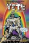 | Yeti: A Love Story | 2008 | EN | mp4 | 480p | David Paige, Adam Malamut, Laura Glascott, Loren Mash, Brie Bouslaugh, Joe Mande, Curt Croner, Eric Gosselin, Leo Boivin, Mark Wahlberg, Noah Wolf, Adam Deyoe, Adam Balivet, Forrest Borie, Sol Cattus Prifto | |
| Yo soy la felicidad de este mundo | 2014 | ES | mp4 | 1080p | Hugo Catalán, Alan Ramírez, Emilio von Sternerfels, Gerardo del Razo, Gabino Rodríguez, Andrea Portal, Iván Álvarez, Rocío Reyes, Gloria Contreras, Aladino R. Blanca, Sergio Anselmo, Juan Carlos Carrasco, Hugo Espinosa, Diana Lein, Javier Oliván | ||
| Yo, adolescente | 2021 | ES | mp4 | 720p | Renato Quattordio, Malena Narvay, Jerónimo Bosia, Thomás Lepera, Majo Chicar, Tomás Wicz, Agustina Cabo, Tomás Agüero, Tomás Raimondi, Gregorio Barrios, Carolina Unrein, Walter Rodríguez, Hernán Morán, Pachi Lucas, Bruno Giganti, María Lía Bagnoli | ||
| You & I | 2016 | DE | mp4 | 720p | George Taylor, Eric Klotzsch, Michal Grabowski | ||
| You Are My Sunshine | 2021 | EN | mp4 | 720p | Simon Bamford, Charles O'Neill, Ernest Vernon, Steve Salt, Jonathan Butler, Charlie Clarke, Kiah Reeves, Jack Knight, Dale Roberts, Rosemary Manjunath | ||
| Yours Faithfully, Edna Welthorpe Mrs | 2017 | EN | mp4 | SD | Alison Steadman, Robin Sebastian | ||
| Zero Patience | 1993 | EN | mp4 | 480p | John Robinson, Norman Fauteux, Dianne Heatherington, Richardo Keens-Douglas, Charlotte Boisjoli, Brenda Kamino, Michael Callen, Marla Lukofsky, Von Flores, Scott Hurst, Duncan McIntosh, Cassel Miles, Benjamin Plener, Bernard Behrens | ||
| הסיפור של יוסי | 2012 | IW | mp4 | 1080p | Ohad Knoller, Lior Ashkenazi, Orly Silbersatz, Oz Zehavi, Ola Schur Selektar, Meir Golan, Shlomi Ben Attar, Amir Jerassi, Bobbi Jene Smith | ||
| השחיין | 2021 | IW | mp4 | 720p | Omer Perelman Striks, Asaf Jonas, Nadia Kucher, Igal Reznik, Gal Ben Amra, Aviv Karmi, Ofek Nicki-Cohen, Roy Reshef, Yarden Tusia-Cohen | ||
| יוסי וג'אגר | 2002 | EN | mp4 | 480p | Ohad Knoller, Yehuda Levi, Asi Cohen, Aya Steinovitz, Shalom Sharon Raginiano, Hani Furstenberg | ||
| מנין | 2022 | EN | mp4 | 720p | Samuel H. Levine, Ron Rifkin, Christopher McCann, Mark Margolis, Richard Topol, Brooke Bloom, Alex Hurt, Riley Barnes, Lawrence Jansen, Elizabeth Loyacano, Carson Meyer, Chris Perfetti, Jonathan Raviv, Drew Reade, Eleanor Reissa, Eli Rosen, Gera Sandler, Sacha Seberg, Zuzanna Szadkowski, Chinaza Uche, Peter Von Berg, Julie Zanata, Zane Pais | ||
| 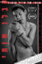 | כמו אותי | 2022 | EN | mp4 | 720p | Yoav Keren, Danny Geva, Itamar Malul, Roni Nadler, Amor Hadria, Atalya Zahavi, Esti Zakheim, Oded Menaster, Yiftach Kaminer, Yoav Sharabany, Yahel Pappo, Orel Pinhasi, Gal Ginossar, Aya Zahavi Feiglin, Itzik Korlaker, Rona Toledano, Matan Saar | |
| עלטה | 2012 | IW | mp4 | 576p | Michael Aloni, Nicholas Jacob, Jamil Khoury, Loai Nofi, Alon Pdut, Khawlah Hag-Debsy, Maysa Daw | ||
| שבלולים בגשם | 2013 | IW | mp4 | 480p | Yoav Reuveni, Moran Rosenblatt, Yariv Mozer, Yehuda Nahari, Hava Ortman, Eyal Cohen, Eran Lev, Lior Soroka, Eyal Kentov, Adi Douiev, Guy Lubelchik, Ori Yaniv, Itay Gonen | ||
| 伯林漂流 | 2017 | EN | mp4 | 720p | Lyota Majima, Kôichi Imaizumi, Mioo Satô, Michael Selvaggio, Claude Kolz, Toby Ashraf, Christian Slaughter, Lupus, Bishop Black, Florian Hagen, Wieland Speck, Jürgen Brüning, Mitsuaki Kishida, Mischka Kral, Ikkô Masuda, Jochen Werner | ||
| 強がりナタ | 2019 | JA | mp4 | 1080p | Tadazô Igami, Shin'ya Orikasa, Takenori Gotô, Yui Akino, Yoshiki Kondô, Atsuko Kubo, Kento Ogura, Kôhei Nagano | ||
| 霸王别姬 | 1993 | ZH | mp4 | 1080p | Leslie Cheung, Zhang Fengyi, Gong Li, Jiang Wenli, Ge You, Lu Qi, Ying Da, Yi Di, Zhi Yitong, Li Chun, Lei Han, Fei Yang, Ma Ming-Wei, Zhao Hai-Long, Yin Zhi, Li Dan, Yang Yong-Chao |